# @staticmethod
# def check_float_list_close_to_zero(float_list, rel_tol=1e-9, abs_tol=0.0, gradient_abs_tol=0.0):
# """
# Checks if the values in the float list are close to zero within the specified tolerance
# and if the gradient (difference between consecutive values) is close to zero within the specified gradient tolerance.
# Returns:
# bool: True if all values are close to zero within the specified tolerance and the gradient of all consecutive values is close to zero within the specified gradient tolerance.
# """
# if not float_list:
# return True
# values_close_to_zero = all(
# math.isclose(value, 0, rel_tol=rel_tol, abs_tol=abs_tol)
# for value in float_list
# )
# if len(float_list) == 1:
# return values_close_to_zero
# gradients_close_to_zero = all(
# math.isclose(float_list[i] - float_list[i - 1], 0, rel_tol=0, abs_tol=gradient_abs_tol)
# for i in range(1, len(float_list))
# )
# return values_close_to_zero and gradients_close_to_zeroHelper classes
ListChecker
ListChecker
def ListChecker(
args:VAR_POSITIONAL, kwargs:VAR_KEYWORD
):
Initialize self. See help(type(self)) for accurate signature.
check_float_list_close_to_zero
check_float_list_close_to_zero
# @staticmethod
# def check_float_list_close_to_zero(float_list, rel_tol=1e-9, abs_tol=0.0, gradient_abs_tol=0.0):
# """
# Checks if the values in the float list are close to zero within the specified tolerance
# and if the gradient (difference between consecutive values) is close to zero within the specified gradient tolerance.
# Returns:
# bool: True if all values are close to zero within the specified tolerance and the gradient of all consecutive values is close to zero within the specified gradient tolerance.
# """
# if not float_list:
# return True
# values_close_to_zero = all(
# math.isclose(value, 0, rel_tol=rel_tol, abs_tol=abs_tol)
# for value in float_list
# )
# if len(float_list) == 1:
# return values_close_to_zero
# gradients_close_to_zero = all(
# math.isclose(float_list[i] - float_list[i - 1], 0, rel_tol=0, abs_tol=gradient_abs_tol)
# for i in range(1, len(float_list))
# )
# return values_close_to_zero and gradients_close_to_zerocheck_float_list_close_to_zero
# @staticmethod
# def check_float_list_close_to_zero(float_list, rel_tol=1e-9, abs_tol=0.0, gradient_abs_tol=0.0):
# """
# Checks if the values in the float list are close to zero within the specified tolerance
# and if the gradient (difference between consecutive values) is close to zero within the specified gradient tolerance.
# Returns:
# bool: True if all values are close to zero within the specified tolerance and the gradient of all consecutive values is close to zero within the specified gradient tolerance.
# """
# if not float_list:
# return True
# values_close_to_zero = all(
# math.isclose(value, 0, rel_tol=rel_tol, abs_tol=abs_tol)
# for value in float_list
# )
# if len(float_list) == 1:
# return values_close_to_zero
# gradients_close_to_zero = all(
# math.isclose(float_list[i] - float_list[i - 1], 0, rel_tol=0, abs_tol=gradient_abs_tol)
# for i in range(1, len(float_list))
# )
# return values_close_to_zero and gradients_close_to_zerocheck_float_list_close_to_zero
# @staticmethod
# def check_float_list_close_to_zero(float_list, rel_tol=1e-9, abs_tol=0.0, gradient_abs_tol=0.0):
# """
# Checks if the values in the float list are close to zero within the specified tolerance
# and if the gradient (difference between consecutive values) is close to zero within the specified gradient tolerance.
# Returns:
# bool: True if all values are close to zero within the specified tolerance and the gradient of all consecutive values is close to zero within the specified gradient tolerance.
# """
# if not float_list:
# return True
# values_close_to_zero = all(
# math.isclose(value, 0, rel_tol=rel_tol, abs_tol=abs_tol)
# for value in float_list
# )
# if len(float_list) == 1:
# return values_close_to_zero
# gradients_close_to_zero = all(
# math.isclose(float_list[i] - float_list[i - 1], 0, rel_tol=0, abs_tol=gradient_abs_tol)
# for i in range(1, len(float_list))
# )
# return values_close_to_zero and gradients_close_to_zero# Example usage:
float_list = [1.00000001, 1.00000002, 1.00000003]
int_list = [1, 1, 1]
print(ListChecker.check_list_unchanged(float_list)) # Should print: True (depending on the tolerance)
print(ListChecker.check_integer_list_unchanged(int_list)) # Should print: True(False, {'gradient_range': 2.220446049250313e-16, 'mean': 1.0000000199999999, 'std_dev': 8.164965850304249e-09})
TrueARC Data
JSONDataManager
JSONDataManager
def JSONDataManager(
path:str, show_timing:bool=False
):
Initialize self. See help(type(self)) for accurate signature.
# #| export
# class JSONDataManager:
# def __init__(self, path: str, show_timing: bool = False):
# self.data = self.load_json(path)
# self.show_timing = show_timing
# @JSONDataManager.timing_decorator
# def load_json(self, path: str) -> Dict:
# with open(path, 'r') as file:
# return json.load(file)
# def timing_decorator(method):
# def timed_method(self, *args, **kwargs):
# start_time = time.time()
# result = method(self, *args, **kwargs)
# end_time = time.time()
# if self.show_timing:
# print(f"Execution time of {method.__name__}: {end_time - start_time:.4f} seconds")
# return result
# return timed_method
# def reload_data(self, path: str):
# self.data = self.load_json(path)# import json
# import time
# from typing import Dict
# def timing_decorator(method):
# def timed_method(self, *args, **kwargs):
# start_time = time.time()
# result = method(self, *args, **kwargs)
# end_time = time.time()
# if self.show_timing:
# print(f"Execution time of {method.__name__}: {end_time - start_time:.4f} seconds")
# return result
# return timed_method
# class JSONDataManager:
# def __init__(self, path: str, show_timing: bool = False):
# self.data = self.load_json(path)
# self.show_timing = show_timing
# @timing_decorator
# def load_json(self, path: str) -> Dict:
# with open(path, 'r') as file:
# return json.load(file)
# def reload_data(self, path: str):
# self.data = self.load_json(path)ChallengesDataManager
ChallengesDataManager
def ChallengesDataManager(
args:VAR_POSITIONAL, kwargs:VAR_KEYWORD
):
SolutionsDataManager
SolutionsDataManager
def SolutionsDataManager(
args:VAR_POSITIONAL, kwargs:VAR_KEYWORD
):
# Example usage
start_time = time.time()
challenges_manager = ChallengesDataManager("C:\\packages\\arc-prize-2024\\arc-agi_training_challenges.json")
end_time = time.time()
print(f"Execution time of challenges load: {end_time - start_time:.4f} seconds")
start_time = time.time()
solutions_manager = SolutionsDataManager("C:\\packages\\arc-prize-2024\\arc-agi_training_solutions.json")
end_time = time.time()
print(f"Execution time of solutions load: {end_time - start_time:.4f} seconds")
print(challenges_manager.get_all_keys())
print(challenges_manager.count_all_keys())
print('get_keys_with_equal_size_input_output')
gkweqsio = challenges_manager.get_keys_with_equal_size_input_output()
print(gkweqsio[0])
print(gkweqsio[1])
print('get_keys_with_equal_size_input_output_sorted')
gkweqsios = challenges_manager.get_keys_with_equal_size_input_output_sorted()
print(gkweqsios)
# print(gkweqsios[0])
# print(gkweqsios[1])
print('get_keys_with_inconsistent_input_output_sizes')
gkwiios = challenges_manager.get_keys_with_inconsistent_input_output_sizes()
print(gkwiios[0])
print(gkwiios[1])
print('get_keys_with_variable_input_sizes')
gkwvts = challenges_manager.get_keys_with_variable_input_sizes()
print(gkwvts[0])
print(gkwvts[1])
print('get_input_array_histogram')
hist = challenges_manager.get_input_array_histogram()
print(hist)
count = 0
for key, value in hist.items():
count += value
print(count)
print('get_data_for_key',challenges_manager.get_data_for_key('007bbfb7'))
print(challenges_manager.get_arrays_for_key('007bbfb7', 'train'))
print(challenges_manager.get_arrays_for_key('007bbfb7', 'test'))
print('get_largest_array_size', challenges_manager.get_largest_array_size())
print('analyze_arrays', challenges_manager.analyze_arrays())
print('get_all_keys', solutions_manager.get_all_keys())
print(solutions_manager.count_all_keys())
get_data_for_key = solutions_manager.get_data_for_key('007bbfb7')
print('get_data_for_key', get_data_for_key)
print(solutions_manager.get_arrays_for_key('007bbfb7', 'output'))Execution time of challenges load: 0.1250 seconds
Execution time of solutions load: 0.0120 seconds
['007bbfb7', '00d62c1b', '017c7c7b', '025d127b', '045e512c', '0520fde7', '05269061', '05f2a901', '06df4c85', '08ed6ac7', '09629e4f', '0962bcdd', '0a938d79', '0b148d64', '0ca9ddb6', '0d3d703e', '0dfd9992', '0e206a2e', '10fcaaa3', '11852cab', '1190e5a7', '137eaa0f', '150deff5', '178fcbfb', '1a07d186', '1b2d62fb', '1b60fb0c', '1bfc4729', '1c786137', '1caeab9d', '1cf80156', '1e0a9b12', '1e32b0e9', '1f0c79e5', '1f642eb9', '1f85a75f', '1f876c06', '1fad071e', '2013d3e2', '2204b7a8', '22168020', '22233c11', '2281f1f4', '228f6490', '22eb0ac0', '234bbc79', '23581191', '239be575', '23b5c85d', '253bf280', '25d487eb', '25d8a9c8', '25ff71a9', '264363fd', '272f95fa', '27a28665', '28bf18c6', '28e73c20', '29623171', '29c11459', '29ec7d0e', '2bcee788', '2bee17df', '2c608aff', '2dc579da', '2dd70a9a', '2dee498d', '31aa019c', '321b1fc6', '32597951', '3345333e', '3428a4f5', '3618c87e', '3631a71a', '363442ee', '36d67576', '36fdfd69', '3906de3d', '39a8645d', '39e1d7f9', '3aa6fb7a', '3ac3eb23', '3af2c5a8', '3bd67248', '3bdb4ada', '3befdf3e', '3c9b0459', '3de23699', '3e980e27', '3eda0437', '3f7978a0', '40853293', '4093f84a', '41e4d17e', '4258a5f9', '4290ef0e', '42a50994', '4347f46a', '444801d8', '445eab21', '447fd412', '44d8ac46', '44f52bb0', '4522001f', '4612dd53', '46442a0e', '469497ad', '46f33fce', '47c1f68c', '484b58aa', '48d8fb45', '4938f0c2', '496994bd', '49d1d64f', '4be741c5', '4c4377d9', '4c5c2cf0', '50846271', '508bd3b6', '50cb2852', '5117e062', '5168d44c', '539a4f51', '53b68214', '543a7ed5', '54d82841', '54d9e175', '5521c0d9', '5582e5ca', '5614dbcf', '56dc2b01', '56ff96f3', '57aa92db', '5ad4f10b', '5bd6f4ac', '5c0a986e', '5c2c9af4', '5daaa586', '60b61512', '6150a2bd', '623ea044', '62c24649', '63613498', '6430c8c4', '6455b5f5', '662c240a', '67385a82', '673ef223', '6773b310', '67a3c6ac', '67a423a3', '67e8384a', '681b3aeb', '6855a6e4', '68b16354', '694f12f3', '6a1e5592', '6aa20dc0', '6b9890af', '6c434453', '6cdd2623', '6cf79266', '6d0160f0', '6d0aefbc', '6d58a25d', '6d75e8bb', '6e02f1e3', '6e19193c', '6e82a1ae', '6ecd11f4', '6f8cd79b', '6fa7a44f', '72322fa7', '72ca375d', '73251a56', '7447852a', '7468f01a', '746b3537', '74dd1130', '75b8110e', '760b3cac', '776ffc46', '77fdfe62', '780d0b14', '7837ac64', '794b24be', '7b6016b9', '7b7f7511', '7c008303', '7ddcd7ec', '7df24a62', '7e0986d6', '7f4411dc', '7fe24cdd', '80af3007', '810b9b61', '82819916', '83302e8f', '834ec97d', '8403a5d5', '846bdb03', '855e0971', '85c4e7cd', '868de0fa', '8731374e', '88a10436', '88a62173', '890034e9', '8a004b2b', '8be77c9e', '8d5021e8', '8d510a79', '8e1813be', '8e5a5113', '8eb1be9a', '8efcae92', '8f2ea7aa', '90c28cc7', '90f3ed37', '913fb3ed', '91413438', '91714a58', '9172f3a0', '928ad970', '93b581b8', '941d9a10', '94f9d214', '952a094c', '9565186b', '95990924', '963e52fc', '97999447', '97a05b5b', '98cf29f8', '995c5fa3', '99b1bc43', '99fa7670', '9aec4887', '9af7a82c', '9d9215db', '9dfd6313', '9ecd008a', '9edfc990', '9f236235', 'a1570a43', 'a2fd1cf0', 'a3325580', 'a3df8b1e', 'a416b8f3', 'a48eeaf7', 'a5313dff', 'a5f85a15', 'a61ba2ce', 'a61f2674', 'a64e4611', 'a65b410d', 'a68b268e', 'a699fb00', 'a740d043', 'a78176bb', 'a79310a0', 'a85d4709', 'a87f7484', 'a8c38be5', 'a8d7556c', 'a9f96cdd', 'aabf363d', 'aba27056', 'ac0a08a4', 'ae3edfdc', 'ae4f1146', 'aedd82e4', 'af902bf9', 'b0c4d837', 'b190f7f5', 'b1948b0a', 'b230c067', 'b27ca6d3', 'b2862040', 'b527c5c6', 'b548a754', 'b60334d2', 'b6afb2da', 'b7249182', 'b775ac94', 'b782dc8a', 'b8825c91', 'b8cdaf2b', 'b91ae062', 'b94a9452', 'b9b7f026', 'ba26e723', 'ba97ae07', 'bb43febb', 'bbc9ae5d', 'bc1d5164', 'bd4472b8', 'bda2d7a6', 'bdad9b1f', 'be94b721', 'beb8660c', 'c0f76784', 'c1d99e64', 'c3e719e8', 'c3f564a4', 'c444b776', 'c59eb873', 'c8cbb738', 'c8f0f002', 'c909285e', 'c9e6f938', 'c9f8e694', 'caa06a1f', 'cbded52d', 'cce03e0d', 'cdecee7f', 'ce22a75a', 'ce4f8723', 'ce602527', 'ce9e57f2', 'cf98881b', 'd037b0a7', 'd06dbe63', 'd07ae81c', 'd0f5fe59', 'd10ecb37', 'd13f3404', 'd22278a0', 'd23f8c26', 'd2abd087', 'd364b489', 'd406998b', 'd43fd935', 'd4469b4b', 'd4a91cb9', 'd4f3cd78', 'd511f180', 'd5d6de2d', 'd631b094', 'd687bc17', 'd6ad076f', 'd89b689b', 'd8c310e9', 'd90796e8', 'd9f24cd1', 'd9fac9be', 'dae9d2b5', 'db3e9e38', 'db93a21d', 'dbc1a6ce', 'dc0a314f', 'dc1df850', 'dc433765', 'ddf7fa4f', 'de1cd16c', 'ded97339', 'e179c5f4', 'e21d9049', 'e26a3af2', 'e3497940', 'e40b9e2f', 'e48d4e1a', 'e5062a87', 'e509e548', 'e50d258f', 'e6721834', 'e73095fd', 'e76a88a6', 'e8593010', 'e8dc4411', 'e9614598', 'e98196ab', 'e9afcf9a', 'ea32f347', 'ea786f4a', 'eb281b96', 'eb5a1d5d', 'ec883f72', 'ecdecbb3', 'ed36ccf7', 'ef135b50', 'f15e1fac', 'f1cefba8', 'f25fbde4', 'f25ffba3', 'f2829549', 'f35d900a', 'f5b8619d', 'f76d97a5', 'f8a8fe49', 'f8b3ba0a', 'f8c80d96', 'f8ff0b80', 'f9012d9b', 'fafffa47', 'fcb5c309', 'fcc82909', 'feca6190', 'ff28f65a', 'ff805c23']
400
get_keys_with_equal_size_input_output
['00d62c1b', '045e512c', '05269061', '06df4c85', '08ed6ac7', '09629e4f', '0962bcdd', '0ca9ddb6', '0d3d703e', '0dfd9992', '11852cab', '1b60fb0c', '1bfc4729', '1e0a9b12', '1e32b0e9', '1f0c79e5', '1f642eb9', '1f876c06', '2204b7a8', '22168020', '22233c11', '2281f1f4', '228f6490', '22eb0ac0', '23581191', '25d8a9c8', '25ff71a9', '264363fd', '28e73c20', '29623171', '29ec7d0e', '2bcee788', '2bee17df', '2dd70a9a', '31aa019c', '321b1fc6', '32597951', '3345333e', '3618c87e', '3631a71a', '36d67576', '3906de3d', '39e1d7f9', '3aa6fb7a', '3bd67248', '3befdf3e', '3c9b0459', '3e980e27', '4093f84a', '41e4d17e', '4258a5f9', '444801d8', '44d8ac46', '484b58aa', '4c5c2cf0', '508bd3b6', '543a7ed5', '5521c0d9', '5582e5ca', '5c0a986e', '5c2c9af4', '60b61512', '6150a2bd', '623ea044', '63613498', '67a3c6ac', '67a423a3', '6855a6e4', '68b16354', '694f12f3', '6c434453', '6cf79266', '6d0160f0', '6d58a25d', '6e02f1e3', '6e19193c', '6e82a1ae', '73251a56', '74dd1130', '776ffc46', '794b24be', '7ddcd7ec', '7df24a62', '7f4411dc', '810b9b61', '83302e8f', '834ec97d', '8403a5d5', '85c4e7cd', '868de0fa', '890034e9', '8d510a79', '8f2ea7aa', '913fb3ed', '91714a58', '93b581b8', '941d9a10', '952a094c', '9565186b', '95990924', '9d9215db', '9dfd6313', '9edfc990', 'a48eeaf7', 'a5313dff', 'a5f85a15', 'a61f2674', 'a64e4611', 'a699fb00', 'a78176bb', 'a79310a0', 'a85d4709', 'a8d7556c', 'aabf363d', 'aba27056', 'ae3edfdc', 'af902bf9', 'b230c067', 'b527c5c6', 'b60334d2', 'b6afb2da', 'b775ac94', 'b8825c91', 'b8cdaf2b', 'bb43febb', 'bda2d7a6', 'bdad9b1f', 'c0f76784', 'c3f564a4', 'c9f8e694', 'caa06a1f', 'cbded52d', 'ce22a75a', 'd037b0a7', 'd06dbe63', 'd22278a0', 'd23f8c26', 'd2abd087', 'd364b489', 'd43fd935', 'd4f3cd78', 'd511f180', 'd5d6de2d', 'd6ad076f', 'd89b689b', 'd9f24cd1', 'db93a21d', 'ddf7fa4f', 'ded97339', 'e40b9e2f', 'e48d4e1a', 'e5062a87', 'e76a88a6', 'e8593010', 'e9614598', 'ea32f347', 'ea786f4a', 'ec883f72', 'ed36ccf7', 'ef135b50', 'f76d97a5', 'f8a8fe49', 'f8c80d96', 'fcc82909']
164
get_keys_with_equal_size_input_output_sorted
[('0d3d703e', 3), ('25d8a9c8', 3), ('25ff71a9', 3), ('3c9b0459', 3), ('5582e5ca', 3), ('6150a2bd', 3), ('6e02f1e3', 3), ('74dd1130', 3), ('794b24be', 3), ('834ec97d', 3), ('9565186b', 3), ('9dfd6313', 3), ('a5f85a15', 3), ('a85d4709', 3), ('b8cdaf2b', 3), ('d037b0a7', 3), ('d23f8c26', 3), ('ea786f4a', 3), ('ed36ccf7', 3), ('f76d97a5', 3), ('1e0a9b12', 4), ('67a3c6ac', 4), ('67a423a3', 4), ('3618c87e', 5), ('68b16354', 5), ('a699fb00', 5), ('a79310a0', 5), ('d511f180', 5), ('00d62c1b', 6), ('28e73c20', 6), ('93b581b8', 6), ('bda2d7a6', 6), ('bdad9b1f', 6), ('ec883f72', 6), ('05269061', 7), ('3aa6fb7a', 7), ('aabf363d', 7), ('aba27056', 7), ('a5313dff', 8), ('cbded52d', 8), ('08ed6ac7', 9), ('0ca9ddb6', 9), ('1f0c79e5', 9), ('23581191', 9), ('4258a5f9', 9), ('60b61512', 9), ('8f2ea7aa', 9), ('a61f2674', 9), ('b60334d2', 9), ('ce22a75a', 9), ('11852cab', 10), ('1b60fb0c', 10), ('1bfc4729', 10), ('1f642eb9', 10), ('1f876c06', 10), ('2204b7a8', 10), ('22168020', 10), ('22233c11', 10), ('2281f1f4', 10), ('228f6490', 10), ('22eb0ac0', 10), ('2bcee788', 10), ('31aa019c', 10), ('321b1fc6', 10), ('3906de3d', 10), ('3befdf3e', 10), ('444801d8', 10), ('5c0a986e', 10), ('63613498', 10), ('694f12f3', 10), ('6c434453', 10), ('6e19193c', 10), ('6e82a1ae', 10), ('7ddcd7ec', 10), ('8403a5d5', 10), ('868de0fa', 10), ('8d510a79', 10), ('941d9a10', 10), ('952a094c', 10), ('95990924', 10), ('a48eeaf7', 10), ('a78176bb', 10), ('af902bf9', 10), ('b230c067', 10), ('b527c5c6', 10), ('b6afb2da', 10), ('bb43febb', 10), ('d22278a0', 10), ('d2abd087', 10), ('d364b489', 10), ('d43fd935', 10), ('d4f3cd78', 10), ('d5d6de2d', 10), ('d6ad076f', 10), ('d89b689b', 10), ('d9f24cd1', 10), ('db93a21d', 10), ('ddf7fa4f', 10), ('ded97339', 10), ('e40b9e2f', 10), ('e48d4e1a', 10), ('e5062a87', 10), ('e76a88a6', 10), ('e8593010', 10), ('e9614598', 10), ('ea32f347', 10), ('ef135b50', 10), ('f8c80d96', 10), ('fcc82909', 10), ('09629e4f', 11), ('29623171', 11), ('6d0160f0', 11), ('caa06a1f', 11), ('0962bcdd', 12), ('2bee17df', 12), ('44d8ac46', 12), ('508bd3b6', 12), ('85c4e7cd', 12), ('913fb3ed', 12), ('c0f76784', 12), ('c9f8e694', 12), ('36d67576', 13), ('3e980e27', 13), ('7f4411dc', 13), ('9edfc990', 13), ('d06dbe63', 13), ('4093f84a', 14), ('4c5c2cf0', 14), ('3bd67248', 15), ('41e4d17e', 15), ('543a7ed5', 15), ('5521c0d9', 15), ('623ea044', 15), ('6855a6e4', 15), ('810b9b61', 15), ('ae3edfdc', 15), ('f8a8fe49', 15), ('3345333e', 16), ('91714a58', 16), ('b8825c91', 16), ('c3f564a4', 16), ('1e32b0e9', 17), ('32597951', 17), ('29ec7d0e', 18), ('a8d7556c', 18), ('9d9215db', 19), ('06df4c85', 20), ('2dd70a9a', 20), ('6cf79266', 20), ('6d58a25d', 20), ('776ffc46', 20), ('045e512c', 21), ('0dfd9992', 21), ('73251a56', 21), ('890034e9', 21), ('5c2c9af4', 23), ('7df24a62', 23), ('39e1d7f9', 24), ('83302e8f', 24), ('484b58aa', 29), ('264363fd', 30), ('3631a71a', 30), ('a64e4611', 30), ('b775ac94', 30)]
get_keys_with_inconsistent_input_output_sizes
['007bbfb7', '017c7c7b', '3af2c5a8', '4522001f', '46f33fce', '4c4377d9', '539a4f51', '62c24649', '67e8384a', '6fa7a44f', '7fe24cdd', '8be77c9e', '8d5021e8', '9172f3a0', 'c3e719e8', 'cce03e0d', 'd13f3404']
17
get_keys_with_variable_input_sizes
['00d62c1b', '025d127b', '05f2a901', '06df4c85', '0a938d79', '0b148d64', '0e206a2e', '10fcaaa3', '1190e5a7', '150deff5', '178fcbfb', '1a07d186', '1c786137', '1caeab9d', '1cf80156', '1e0a9b12', '239be575', '23b5c85d', '253bf280', '25d487eb', '272f95fa', '28e73c20', '2bee17df', '2c608aff', '2dc579da', '2dd70a9a', '2dee498d', '36fdfd69', '39e1d7f9', '3bd67248', '3de23699', '3eda0437', '3f7978a0', '40853293', '4290ef0e', '42a50994', '4347f46a', '4612dd53', '46442a0e', '47c1f68c', '4938f0c2', '49d1d64f', '4be741c5', '4c5c2cf0', '50846271', '50cb2852', '5168d44c', '53b68214', '54d82841', '54d9e175', '56dc2b01', '56ff96f3', '57aa92db', '5ad4f10b', '5daaa586', '623ea044', '6455b5f5', '67385a82', '673ef223', '67a3c6ac', '67a423a3', '68b16354', '6aa20dc0', '6b9890af', '6cdd2623', '6d75e8bb', '6ecd11f4', '6f8cd79b', '72322fa7', '7468f01a', '746b3537', '77fdfe62', '780d0b14', '7837ac64', '7b6016b9', '7b7f7511', '7f4411dc', '810b9b61', '82819916', '83302e8f', '834ec97d', '855e0971', '85c4e7cd', '868de0fa', '8731374e', '88a10436', '8a004b2b', '8e1813be', '8eb1be9a', '913fb3ed', '928ad970', '95990924', '97999447', '97a05b5b', '98cf29f8', '99fa7670', '9aec4887', '9af7a82c', '9dfd6313', '9edfc990', '9f236235', 'a1570a43', 'a2fd1cf0', 'a416b8f3', 'a5313dff', 'a5f85a15', 'a65b410d', 'a699fb00', 'a740d043', 'a79310a0', 'a87f7484', 'a8c38be5', 'aba27056', 'aedd82e4', 'b0c4d837', 'b190f7f5', 'b1948b0a', 'b2862040', 'b527c5c6', 'b548a754', 'b7249182', 'b775ac94', 'b782dc8a', 'b8cdaf2b', 'b9b7f026', 'ba97ae07', 'bd4472b8', 'bda2d7a6', 'be94b721', 'beb8660c', 'c1d99e64', 'c59eb873', 'c8cbb738', 'c909285e', 'caa06a1f', 'ce602527', 'ce9e57f2', 'd07ae81c', 'd0f5fe59', 'd10ecb37', 'd22278a0', 'd23f8c26', 'd4a91cb9', 'd511f180', 'd5d6de2d', 'd687bc17', 'd90796e8', 'd9fac9be', 'db3e9e38', 'db93a21d', 'dbc1a6ce', 'dc1df850', 'dc433765', 'de1cd16c', 'e21d9049', 'e26a3af2', 'e509e548', 'e6721834', 'e73095fd', 'e8dc4411', 'ea786f4a', 'eb281b96', 'eb5a1d5d', 'ec883f72', 'ecdecbb3', 'f15e1fac', 'f1cefba8', 'f35d900a', 'f5b8619d', 'f76d97a5', 'f9012d9b', 'fcb5c309', 'ff28f65a']
173
get_input_array_histogram
{5: 18, 3: 236, 2: 57, 4: 78, 6: 5, 8: 2, 7: 3, 10: 1}
400
get_data_for_key {'test': [{'input': [[7, 0, 7], [7, 0, 7], [7, 7, 0]]}], 'train': [{'input': [[0, 7, 7], [7, 7, 7], [0, 7, 7]], 'output': [[0, 0, 0, 0, 7, 7, 0, 7, 7], [0, 0, 0, 7, 7, 7, 7, 7, 7], [0, 0, 0, 0, 7, 7, 0, 7, 7], [0, 7, 7, 0, 7, 7, 0, 7, 7], [7, 7, 7, 7, 7, 7, 7, 7, 7], [0, 7, 7, 0, 7, 7, 0, 7, 7], [0, 0, 0, 0, 7, 7, 0, 7, 7], [0, 0, 0, 7, 7, 7, 7, 7, 7], [0, 0, 0, 0, 7, 7, 0, 7, 7]]}, {'input': [[4, 0, 4], [0, 0, 0], [0, 4, 0]], 'output': [[4, 0, 4, 0, 0, 0, 4, 0, 4], [0, 0, 0, 0, 0, 0, 0, 0, 0], [0, 4, 0, 0, 0, 0, 0, 4, 0], [0, 0, 0, 0, 0, 0, 0, 0, 0], [0, 0, 0, 0, 0, 0, 0, 0, 0], [0, 0, 0, 0, 0, 0, 0, 0, 0], [0, 0, 0, 4, 0, 4, 0, 0, 0], [0, 0, 0, 0, 0, 0, 0, 0, 0], [0, 0, 0, 0, 4, 0, 0, 0, 0]]}, {'input': [[0, 0, 0], [0, 0, 2], [2, 0, 2]], 'output': [[0, 0, 0, 0, 0, 0, 0, 0, 0], [0, 0, 0, 0, 0, 0, 0, 0, 0], [0, 0, 0, 0, 0, 0, 0, 0, 0], [0, 0, 0, 0, 0, 0, 0, 0, 0], [0, 0, 0, 0, 0, 0, 0, 0, 2], [0, 0, 0, 0, 0, 0, 2, 0, 2], [0, 0, 0, 0, 0, 0, 0, 0, 0], [0, 0, 2, 0, 0, 0, 0, 0, 2], [2, 0, 2, 0, 0, 0, 2, 0, 2]]}, {'input': [[6, 6, 0], [6, 0, 0], [0, 6, 6]], 'output': [[6, 6, 0, 6, 6, 0, 0, 0, 0], [6, 0, 0, 6, 0, 0, 0, 0, 0], [0, 6, 6, 0, 6, 6, 0, 0, 0], [6, 6, 0, 0, 0, 0, 0, 0, 0], [6, 0, 0, 0, 0, 0, 0, 0, 0], [0, 6, 6, 0, 0, 0, 0, 0, 0], [0, 0, 0, 6, 6, 0, 6, 6, 0], [0, 0, 0, 6, 0, 0, 6, 0, 0], [0, 0, 0, 0, 6, 6, 0, 6, 6]]}, {'input': [[2, 2, 2], [0, 0, 0], [0, 2, 2]], 'output': [[2, 2, 2, 2, 2, 2, 2, 2, 2], [0, 0, 0, 0, 0, 0, 0, 0, 0], [0, 2, 2, 0, 2, 2, 0, 2, 2], [0, 0, 0, 0, 0, 0, 0, 0, 0], [0, 0, 0, 0, 0, 0, 0, 0, 0], [0, 0, 0, 0, 0, 0, 0, 0, 0], [0, 0, 0, 2, 2, 2, 2, 2, 2], [0, 0, 0, 0, 0, 0, 0, 0, 0], [0, 0, 0, 0, 2, 2, 0, 2, 2]]}]}
[]
[]
get_largest_array_size ('1f85a75f', 900)
analyze_arrays {'analysis': {'equal_input_output': ['045e512c', '05269061', '08ed6ac7', '09629e4f', '0962bcdd', '0ca9ddb6', '0d3d703e', '0dfd9992', '11852cab', '1b60fb0c', '1bfc4729', '1e32b0e9', '1f0c79e5', '1f642eb9', '1f876c06', '2204b7a8', '22168020', '22233c11', '2281f1f4', '228f6490', '22eb0ac0', '23581191', '25d8a9c8', '25ff71a9', '264363fd', '29623171', '29c11459', '29ec7d0e', '2bcee788', '31aa019c', '321b1fc6', '32597951', '3345333e', '3618c87e', '3631a71a', '363442ee', '36d67576', '3906de3d', '3aa6fb7a', '3befdf3e', '3c9b0459', '3e980e27', '4093f84a', '41e4d17e', '4258a5f9', '444801d8', '447fd412', '44d8ac46', '484b58aa', '508bd3b6', '543a7ed5', '5521c0d9', '5582e5ca', '5c0a986e', '5c2c9af4', '60b61512', '6150a2bd', '63613498', '6855a6e4', '694f12f3', '6a1e5592', '6c434453', '6cf79266', '6d0160f0', '6d58a25d', '6e02f1e3', '6e19193c', '6e82a1ae', '73251a56', '74dd1130', '760b3cac', '776ffc46', '794b24be', '7ddcd7ec', '7df24a62', '8403a5d5', '890034e9', '8d510a79', '8e5a5113', '8f2ea7aa', '90f3ed37', '91714a58', '93b581b8', '941d9a10', '952a094c', '9565186b', '9d9215db', 'a48eeaf7', 'a61f2674', 'a64e4611', 'a78176bb', 'a85d4709', 'a8d7556c', 'a9f96cdd', 'aabf363d', 'ae3edfdc', 'af902bf9', 'b230c067', 'b60334d2', 'b6afb2da', 'b8825c91', 'bb43febb', 'bdad9b1f', 'c0f76784', 'c3f564a4', 'c9f8e694', 'cbded52d', 'ce22a75a', 'd037b0a7', 'd06dbe63', 'd2abd087', 'd364b489', 'd43fd935', 'd4f3cd78', 'd6ad076f', 'd89b689b', 'd8c310e9', 'd9f24cd1', 'ddf7fa4f', 'ded97339', 'e40b9e2f', 'e48d4e1a', 'e5062a87', 'e76a88a6', 'e8593010', 'e9614598', 'e9afcf9a', 'ea32f347', 'ed36ccf7', 'ef135b50', 'f25ffba3', 'f8a8fe49', 'f8c80d96', 'fcc82909'], 'consistent_but_different_sizes': ['007bbfb7', '017c7c7b', '0520fde7', '137eaa0f', '1b2d62fb', '1fad071e', '2013d3e2', '27a28665', '28bf18c6', '3428a4f5', '39a8645d', '3af2c5a8', '445eab21', '44f52bb0', '4522001f', '46f33fce', '48d8fb45', '4c4377d9', '5117e062', '539a4f51', '5614dbcf', '5bd6f4ac', '62c24649', '6430c8c4', '662c240a', '6773b310', '67e8384a', '681b3aeb', '6d0aefbc', '6fa7a44f', '75b8110e', '7c008303', '7fe24cdd', '80af3007', '88a62173', '8be77c9e', '8d5021e8', '9172f3a0', '94f9d214', '995c5fa3', '99b1bc43', '9ecd008a', 'a61ba2ce', 'a68b268e', 'ae4f1146', 'bc1d5164', 'c3e719e8', 'c9e6f938', 'cce03e0d', 'cdecee7f', 'ce4f8723', 'cf98881b', 'd13f3404', 'd4469b4b', 'dae9d2b5', 'dc0a314f', 'e3497940', 'e98196ab', 'f2829549', 'f8ff0b80', 'fafffa47', 'ff805c23'], 'variable_output_sizes': ['00d62c1b', '025d127b', '05f2a901', '06df4c85', '0a938d79', '0b148d64', '0e206a2e', '10fcaaa3', '1190e5a7', '150deff5', '178fcbfb', '1a07d186', '1c786137', '1caeab9d', '1cf80156', '1e0a9b12', '1f85a75f', '234bbc79', '239be575', '23b5c85d', '253bf280', '25d487eb', '272f95fa', '28e73c20', '2bee17df', '2c608aff', '2dc579da', '2dd70a9a', '2dee498d', '36fdfd69', '39e1d7f9', '3ac3eb23', '3bd67248', '3bdb4ada', '3de23699', '3eda0437', '3f7978a0', '40853293', '4290ef0e', '42a50994', '4347f46a', '4612dd53', '46442a0e', '469497ad', '47c1f68c', '4938f0c2', '496994bd', '49d1d64f', '4be741c5', '4c5c2cf0', '50846271', '50cb2852', '5168d44c', '53b68214', '54d82841', '54d9e175', '56dc2b01', '56ff96f3', '57aa92db', '5ad4f10b', '5daaa586', '623ea044', '6455b5f5', '67385a82', '673ef223', '67a3c6ac', '67a423a3', '68b16354', '6aa20dc0', '6b9890af', '6cdd2623', '6d75e8bb', '6ecd11f4', '6f8cd79b', '72322fa7', '72ca375d', '7447852a', '7468f01a', '746b3537', '77fdfe62', '780d0b14', '7837ac64', '7b6016b9', '7b7f7511', '7e0986d6', '7f4411dc', '810b9b61', '82819916', '83302e8f', '834ec97d', '846bdb03', '855e0971', '85c4e7cd', '868de0fa', '8731374e', '88a10436', '8a004b2b', '8e1813be', '8eb1be9a', '8efcae92', '90c28cc7', '913fb3ed', '91413438', '928ad970', '95990924', '963e52fc', '97999447', '97a05b5b', '98cf29f8', '99fa7670', '9aec4887', '9af7a82c', '9dfd6313', '9edfc990', '9f236235', 'a1570a43', 'a2fd1cf0', 'a3325580', 'a3df8b1e', 'a416b8f3', 'a5313dff', 'a5f85a15', 'a65b410d', 'a699fb00', 'a740d043', 'a79310a0', 'a87f7484', 'a8c38be5', 'aba27056', 'ac0a08a4', 'aedd82e4', 'b0c4d837', 'b190f7f5', 'b1948b0a', 'b27ca6d3', 'b2862040', 'b527c5c6', 'b548a754', 'b7249182', 'b775ac94', 'b782dc8a', 'b8cdaf2b', 'b91ae062', 'b94a9452', 'b9b7f026', 'ba26e723', 'ba97ae07', 'bbc9ae5d', 'bd4472b8', 'bda2d7a6', 'be94b721', 'beb8660c', 'c1d99e64', 'c444b776', 'c59eb873', 'c8cbb738', 'c8f0f002', 'c909285e', 'caa06a1f', 'ce602527', 'ce9e57f2', 'd07ae81c', 'd0f5fe59', 'd10ecb37', 'd22278a0', 'd23f8c26', 'd406998b', 'd4a91cb9', 'd511f180', 'd5d6de2d', 'd631b094', 'd687bc17', 'd90796e8', 'd9fac9be', 'db3e9e38', 'db93a21d', 'dbc1a6ce', 'dc1df850', 'dc433765', 'de1cd16c', 'e179c5f4', 'e21d9049', 'e26a3af2', 'e509e548', 'e50d258f', 'e6721834', 'e73095fd', 'e8dc4411', 'ea786f4a', 'eb281b96', 'eb5a1d5d', 'ec883f72', 'ecdecbb3', 'f15e1fac', 'f1cefba8', 'f25fbde4', 'f35d900a', 'f5b8619d', 'f76d97a5', 'f8b3ba0a', 'f9012d9b', 'fcb5c309', 'feca6190', 'ff28f65a']}, 'counts': {'equal_input_output': 134, 'consistent_but_different_sizes': 62, 'variable_output_sizes': 204}}
get_all_keys ['007bbfb7', '00d62c1b', '017c7c7b', '025d127b', '045e512c', '0520fde7', '05269061', '05f2a901', '06df4c85', '08ed6ac7', '09629e4f', '0962bcdd', '0a938d79', '0b148d64', '0ca9ddb6', '0d3d703e', '0dfd9992', '0e206a2e', '10fcaaa3', '11852cab', '1190e5a7', '137eaa0f', '150deff5', '178fcbfb', '1a07d186', '1b2d62fb', '1b60fb0c', '1bfc4729', '1c786137', '1caeab9d', '1cf80156', '1e0a9b12', '1e32b0e9', '1f0c79e5', '1f642eb9', '1f85a75f', '1f876c06', '1fad071e', '2013d3e2', '2204b7a8', '22168020', '22233c11', '2281f1f4', '228f6490', '22eb0ac0', '234bbc79', '23581191', '239be575', '23b5c85d', '253bf280', '25d487eb', '25d8a9c8', '25ff71a9', '264363fd', '272f95fa', '27a28665', '28bf18c6', '28e73c20', '29623171', '29c11459', '29ec7d0e', '2bcee788', '2bee17df', '2c608aff', '2dc579da', '2dd70a9a', '2dee498d', '31aa019c', '321b1fc6', '32597951', '3345333e', '3428a4f5', '3618c87e', '3631a71a', '363442ee', '36d67576', '36fdfd69', '3906de3d', '39a8645d', '39e1d7f9', '3aa6fb7a', '3ac3eb23', '3af2c5a8', '3bd67248', '3bdb4ada', '3befdf3e', '3c9b0459', '3de23699', '3e980e27', '3eda0437', '3f7978a0', '40853293', '4093f84a', '41e4d17e', '4258a5f9', '4290ef0e', '42a50994', '4347f46a', '444801d8', '445eab21', '447fd412', '44d8ac46', '44f52bb0', '4522001f', '4612dd53', '46442a0e', '469497ad', '46f33fce', '47c1f68c', '484b58aa', '48d8fb45', '4938f0c2', '496994bd', '49d1d64f', '4be741c5', '4c4377d9', '4c5c2cf0', '50846271', '508bd3b6', '50cb2852', '5117e062', '5168d44c', '539a4f51', '53b68214', '543a7ed5', '54d82841', '54d9e175', '5521c0d9', '5582e5ca', '5614dbcf', '56dc2b01', '56ff96f3', '57aa92db', '5ad4f10b', '5bd6f4ac', '5c0a986e', '5c2c9af4', '5daaa586', '60b61512', '6150a2bd', '623ea044', '62c24649', '63613498', '6430c8c4', '6455b5f5', '662c240a', '67385a82', '673ef223', '6773b310', '67a3c6ac', '67a423a3', '67e8384a', '681b3aeb', '6855a6e4', '68b16354', '694f12f3', '6a1e5592', '6aa20dc0', '6b9890af', '6c434453', '6cdd2623', '6cf79266', '6d0160f0', '6d0aefbc', '6d58a25d', '6d75e8bb', '6e02f1e3', '6e19193c', '6e82a1ae', '6ecd11f4', '6f8cd79b', '6fa7a44f', '72322fa7', '72ca375d', '73251a56', '7447852a', '7468f01a', '746b3537', '74dd1130', '75b8110e', '760b3cac', '776ffc46', '77fdfe62', '780d0b14', '7837ac64', '794b24be', '7b6016b9', '7b7f7511', '7c008303', '7ddcd7ec', '7df24a62', '7e0986d6', '7f4411dc', '7fe24cdd', '80af3007', '810b9b61', '82819916', '83302e8f', '834ec97d', '8403a5d5', '846bdb03', '855e0971', '85c4e7cd', '868de0fa', '8731374e', '88a10436', '88a62173', '890034e9', '8a004b2b', '8be77c9e', '8d5021e8', '8d510a79', '8e1813be', '8e5a5113', '8eb1be9a', '8efcae92', '8f2ea7aa', '90c28cc7', '90f3ed37', '913fb3ed', '91413438', '91714a58', '9172f3a0', '928ad970', '93b581b8', '941d9a10', '94f9d214', '952a094c', '9565186b', '95990924', '963e52fc', '97999447', '97a05b5b', '98cf29f8', '995c5fa3', '99b1bc43', '99fa7670', '9aec4887', '9af7a82c', '9d9215db', '9dfd6313', '9ecd008a', '9edfc990', '9f236235', 'a1570a43', 'a2fd1cf0', 'a3325580', 'a3df8b1e', 'a416b8f3', 'a48eeaf7', 'a5313dff', 'a5f85a15', 'a61ba2ce', 'a61f2674', 'a64e4611', 'a65b410d', 'a68b268e', 'a699fb00', 'a740d043', 'a78176bb', 'a79310a0', 'a85d4709', 'a87f7484', 'a8c38be5', 'a8d7556c', 'a9f96cdd', 'aabf363d', 'aba27056', 'ac0a08a4', 'ae3edfdc', 'ae4f1146', 'aedd82e4', 'af902bf9', 'b0c4d837', 'b190f7f5', 'b1948b0a', 'b230c067', 'b27ca6d3', 'b2862040', 'b527c5c6', 'b548a754', 'b60334d2', 'b6afb2da', 'b7249182', 'b775ac94', 'b782dc8a', 'b8825c91', 'b8cdaf2b', 'b91ae062', 'b94a9452', 'b9b7f026', 'ba26e723', 'ba97ae07', 'bb43febb', 'bbc9ae5d', 'bc1d5164', 'bd4472b8', 'bda2d7a6', 'bdad9b1f', 'be94b721', 'beb8660c', 'c0f76784', 'c1d99e64', 'c3e719e8', 'c3f564a4', 'c444b776', 'c59eb873', 'c8cbb738', 'c8f0f002', 'c909285e', 'c9e6f938', 'c9f8e694', 'caa06a1f', 'cbded52d', 'cce03e0d', 'cdecee7f', 'ce22a75a', 'ce4f8723', 'ce602527', 'ce9e57f2', 'cf98881b', 'd037b0a7', 'd06dbe63', 'd07ae81c', 'd0f5fe59', 'd10ecb37', 'd13f3404', 'd22278a0', 'd23f8c26', 'd2abd087', 'd364b489', 'd406998b', 'd43fd935', 'd4469b4b', 'd4a91cb9', 'd4f3cd78', 'd511f180', 'd5d6de2d', 'd631b094', 'd687bc17', 'd6ad076f', 'd89b689b', 'd8c310e9', 'd90796e8', 'd9f24cd1', 'd9fac9be', 'dae9d2b5', 'db3e9e38', 'db93a21d', 'dbc1a6ce', 'dc0a314f', 'dc1df850', 'dc433765', 'ddf7fa4f', 'de1cd16c', 'ded97339', 'e179c5f4', 'e21d9049', 'e26a3af2', 'e3497940', 'e40b9e2f', 'e48d4e1a', 'e5062a87', 'e509e548', 'e50d258f', 'e6721834', 'e73095fd', 'e76a88a6', 'e8593010', 'e8dc4411', 'e9614598', 'e98196ab', 'e9afcf9a', 'ea32f347', 'ea786f4a', 'eb281b96', 'eb5a1d5d', 'ec883f72', 'ecdecbb3', 'ed36ccf7', 'ef135b50', 'f15e1fac', 'f1cefba8', 'f25fbde4', 'f25ffba3', 'f2829549', 'f35d900a', 'f5b8619d', 'f76d97a5', 'f8a8fe49', 'f8b3ba0a', 'f8c80d96', 'f8ff0b80', 'f9012d9b', 'fafffa47', 'fcb5c309', 'fcc82909', 'feca6190', 'ff28f65a', 'ff805c23']
400
get_data_for_key [[7, 0, 7, 0, 0, 0, 7, 0, 7], [7, 0, 7, 0, 0, 0, 7, 0, 7], [7, 7, 0, 0, 0, 0, 7, 7, 0], [7, 0, 7, 0, 0, 0, 7, 0, 7], [7, 0, 7, 0, 0, 0, 7, 0, 7], [7, 7, 0, 0, 0, 0, 7, 7, 0], [7, 0, 7, 7, 0, 7, 0, 0, 0], [7, 0, 7, 7, 0, 7, 0, 0, 0], [7, 7, 0, 7, 7, 0, 0, 0, 0]]
[]DataManagerSingleton
DataManagerSingleton
def DataManagerSingleton(
folder:str, prefix:str, show_timing:bool=False
):
Initialize self. See help(type(self)) for accurate signature.
# From: https://www.kaggle.com/code/allegich/arc-2024-show-all-400-training-tasks?scriptVersionId=190186517&cellId=12
def plot_task(task, task_solutions, i, t):
""" Plots the first train and test pairs of a specified task,
using same color scheme as the ARC app """
num_train = len(task['train'])
num_test = len(task['test'])
w=num_train+num_test
fig, axs = plt.subplots(2, w, figsize=(3*w ,3*2))
plt.suptitle(f'Set #{i}, {t}:', fontsize=20, fontweight='bold', y=1)
#plt.subplots_adjust(hspace = 0.15)
#plt.subplots_adjust(wspace=20, hspace=20)
for j in range(num_train):
plot_one(axs[0, j], j,'train', 'input')
plot_one(axs[1, j], j,'train', 'output')
plot_one(axs[0, j+1], 0, 'test', 'input')
answer = task_solutions
input_matrix = answer
axs[1, j+1].imshow(input_matrix, cmap=cmap, norm=norm)
axs[1, j+1].grid(True, which = 'both',color = 'lightgrey', linewidth = 0.5)
axs[1, j+1].set_yticks([x-0.5 for x in range(1 + len(input_matrix))])
axs[1, j+1].set_xticks([x-0.5 for x in range(1 + len(input_matrix[0]))])
axs[1, j+1].set_xticklabels([])
axs[1, j+1].set_yticklabels([])
axs[1, j+1].set_title('Test output')
axs[1, j+1] = plt.figure(1).add_subplot(111)
axs[1, j+1].set_xlim([0, num_train+1])
for m in range(1, num_train):
axs[1, j+1].plot([m,m],[0,1],'--', linewidth=1, color = 'black')
axs[1, j+1].plot([num_train,num_train],[0,1],'-', linewidth=3, color = 'black')
axs[1, j+1].axis("off")
fig.patch.set_linewidth(5)
fig.patch.set_edgecolor('black')
fig.patch.set_facecolor('#dddddd')
plt.tight_layout()
print(f'#{i}, {t}') # for fast and convinience search
plt.show()
print()
print()
def plot_one(ax, i, train_or_test, input_or_output):
input_matrix = task[train_or_test][i][input_or_output]
ax.imshow(input_matrix, cmap=cmap, norm=norm)
ax.grid(True, which = 'both',color = 'lightgrey', linewidth = 0.5)
plt.setp(plt.gcf().get_axes(), xticklabels=[], yticklabels=[])
ax.set_xticks([x-0.5 for x in range(1 + len(input_matrix[0]))])
ax.set_yticks([x-0.5 for x in range(1 + len(input_matrix))])
ax.set_title(train_or_test + ' ' + input_or_output)code = '00000001'
data_mgr = DataManagerSingleton.get_instance(folder = 'c:/tmp/arc-prize-2024', prefix = 'arc-agi_simple_', show_timing=True)
data = data_mgr.get_data_for_code(code)
print(data)
out = data_mgr.get_solutions_for_code(code)
print(out)
print(data_mgr.get_num_arrays_for_code(code))Execution time of __init__: 0.0000 seconds
Execution time of __init__: 0.0000 seconds
{'test': [{'input': [[2]]}], 'train': [{'input': [[3]], 'output': [[4]]}, {'input': [[7]], 'output': [[8]]}, {'input': [[1]], 'output': [[2]]}]}
[[3]]
3code = '00000003'
data_mgr1 = DataManagerSingleton.get_instance()
data = data_mgr1.get_data_for_code(code)
print(data)
out = data_mgr1.get_solutions_for_code(code)
print(out)
print(data_mgr1.get_num_arrays_for_code(code)){'test': [{'input': [[2, 2], [2, 2]]}], 'train': [{'input': [[3, 3], [3, 3]], 'output': [[4, 4], [4, 4]]}, {'input': [[7, 7], [7, 7]], 'output': [[8, 8], [8, 8]]}, {'input': [[1, 1], [1, 1]], 'output': [[2, 2], [2, 2]]}]}
[[3, 3], [3, 3]]
3# From: https://www.kaggle.com/code/allegich/arc-2024-show-all-400-training-tasks?scriptVersionId=190186517&cellId=11
# 0:black, 1:blue, 2:red, 3:green, 4:yellow, # 5:gray, 6:magenta, 7:orange, 8:sky, 9:brown
# rgb_values = [
# (0, 0, 0), (0, 116, 217), (255, 65, 54), (46, 204, 64), (255, 220, 0), (170, 170, 170), (240, 18, 190), (255, 133, 27), (127, 219, 255), (135, 12, 37)]
import matplotlib.pyplot as plt
from matplotlib import colors
cmap = colors.ListedColormap(
['#000000', '#0074D9', '#FF4136', '#2ECC40', '#FFDC00',
'#AAAAAA', '#F012BE', '#FF851B', '#7FDBFF', '#870C25'])
norm = colors.Normalize(vmin=0, vmax=9)
plt.figure(figsize=(3, 1), dpi=150)
plt.imshow([list(range(10))], cmap=cmap, norm=norm)
plt.xticks(list(range(10)))
plt.yticks([])
plt.show()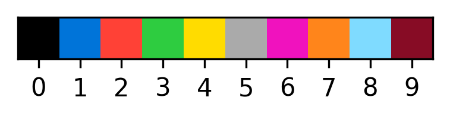
code = '00000003'
task = data_mgr.get_data_for_code(code)
print(task)
task_solution = data_mgr.get_solutions_for_code(code)
print(task_solution)
plot_task(task, task_solution, 15, code){'test': [{'input': [[2, 2], [2, 2]]}], 'train': [{'input': [[3, 3], [3, 3]], 'output': [[4, 4], [4, 4]]}, {'input': [[7, 7], [7, 7]], 'output': [[8, 8], [8, 8]]}, {'input': [[1, 1], [1, 1]], 'output': [[2, 2], [2, 2]]}]}
[[3, 3], [3, 3]]
#15, 00000003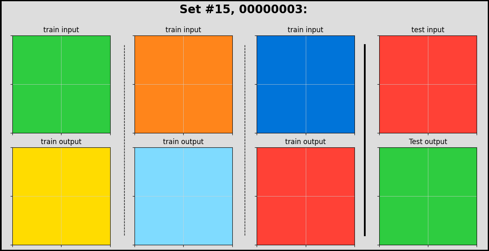
code = '00000007'
task = data_mgr.get_data_for_code(code)
print(task)
task_solution = data_mgr.get_solutions_for_code(code)
print(task_solution)
plot_task(task, task_solution, 15, code){'test': [{'input': [[2, 2, 2, 2, 2, 2, 2, 2, 2], [2, 2, 2, 2, 2, 2, 2, 2, 2], [2, 2, 2, 2, 2, 2, 2, 2, 2], [2, 2, 2, 2, 2, 2, 2, 2, 2], [2, 2, 2, 2, 2, 2, 2, 2, 2], [2, 2, 2, 2, 2, 2, 2, 2, 2], [2, 2, 2, 2, 2, 2, 2, 2, 2], [2, 2, 2, 2, 2, 2, 2, 2, 2], [2, 2, 2, 2, 2, 2, 2, 2, 2]]}], 'train': [{'input': [[3, 3, 3, 3, 3, 3, 3, 3, 3], [3, 3, 3, 3, 3, 3, 3, 3, 3], [3, 3, 3, 3, 3, 3, 3, 3, 3], [3, 3, 3, 3, 3, 3, 3, 3, 3], [3, 3, 3, 3, 3, 3, 3, 3, 3], [3, 3, 3, 3, 3, 3, 3, 3, 3], [3, 3, 3, 3, 3, 3, 3, 3, 3], [3, 3, 3, 3, 3, 3, 3, 3, 3], [3, 3, 3, 3, 3, 3, 3, 3, 3]], 'output': [[6, 6, 6, 6, 6, 6, 6, 6, 6], [6, 6, 6, 6, 6, 6, 6, 6, 6], [6, 6, 6, 6, 6, 6, 6, 6, 6], [6, 6, 6, 6, 6, 6, 6, 6, 6], [6, 6, 6, 6, 6, 6, 6, 6, 6], [6, 6, 6, 6, 6, 6, 6, 6, 6], [6, 6, 6, 6, 6, 6, 6, 6, 6], [6, 6, 6, 6, 6, 6, 6, 6, 6], [6, 6, 6, 6, 6, 6, 6, 6, 6]]}, {'input': [[6, 6, 6, 6, 6, 6, 6, 6, 6], [6, 6, 6, 6, 6, 6, 6, 6, 6], [6, 6, 6, 6, 6, 6, 6, 6, 6], [6, 6, 6, 6, 6, 6, 6, 6, 6], [6, 6, 6, 6, 6, 6, 6, 6, 6], [6, 6, 6, 6, 6, 6, 6, 6, 6], [6, 6, 6, 6, 6, 6, 6, 6, 6], [6, 6, 6, 6, 6, 6, 6, 6, 6], [6, 6, 6, 6, 6, 6, 6, 6, 6]], 'output': [[9, 9, 9, 9, 9, 9, 9, 9, 9], [9, 9, 9, 9, 9, 9, 9, 9, 9], [9, 9, 9, 9, 9, 9, 9, 9, 9], [9, 9, 9, 9, 9, 9, 9, 9, 9], [9, 9, 9, 9, 9, 9, 9, 9, 9], [9, 9, 9, 9, 9, 9, 9, 9, 9], [9, 9, 9, 9, 9, 9, 9, 9, 9], [9, 9, 9, 9, 9, 9, 9, 9, 9], [9, 9, 9, 9, 9, 9, 9, 9, 9]]}, {'input': [[1, 1, 1, 1, 1, 1, 1, 1, 1], [1, 1, 1, 1, 1, 1, 1, 1, 1], [1, 1, 1, 1, 1, 1, 1, 1, 1], [1, 1, 1, 1, 1, 1, 1, 1, 1], [1, 1, 1, 1, 1, 1, 1, 1, 1], [1, 1, 1, 1, 1, 1, 1, 1, 1], [1, 1, 1, 1, 1, 1, 1, 1, 1], [1, 1, 1, 1, 1, 1, 1, 1, 1], [1, 1, 1, 1, 1, 1, 1, 1, 1]], 'output': [[4, 4, 4, 4, 4, 4, 4, 4, 4], [4, 4, 4, 4, 4, 4, 4, 4, 4], [4, 4, 4, 4, 4, 4, 4, 4, 4], [4, 4, 4, 4, 4, 4, 4, 4, 4], [4, 4, 4, 4, 4, 4, 4, 4, 4], [4, 4, 4, 4, 4, 4, 4, 4, 4], [4, 4, 4, 4, 4, 4, 4, 4, 4], [4, 4, 4, 4, 4, 4, 4, 4, 4], [4, 4, 4, 4, 4, 4, 4, 4, 4]]}]}
[5, 5, 5, 5, 5, 5, 5, 5, 5]--------------------------------------------------------------------------- TypeError Traceback (most recent call last) Cell In[23], line 7 5 task_solution = data_mgr.get_solutions_for_code(code) 6 print(task_solution) ----> 7 plot_task(task, task_solution, 15, code) Cell In[17], line 26, in plot_task(task, task_solutions, i, t) 23 answer = task_solutions 24 input_matrix = answer ---> 26 axs[1, j+1].imshow(input_matrix, cmap=cmap, norm=norm) 27 axs[1, j+1].grid(True, which = 'both',color = 'lightgrey', linewidth = 0.5) 28 axs[1, j+1].set_yticks([x-0.5 for x in range(1 + len(input_matrix))]) File c:\Users\ruper\AppData\Local\Programs\Python\Python39\lib\site-packages\matplotlib\_api\deprecation.py:456, in make_keyword_only.<locals>.wrapper(*args, **kwargs) 450 if len(args) > name_idx: 451 warn_deprecated( 452 since, message="Passing the %(name)s %(obj_type)s " 453 "positionally is deprecated since Matplotlib %(since)s; the " 454 "parameter will become keyword-only %(removal)s.", 455 name=name, obj_type=f"parameter of {func.__name__}()") --> 456 return func(*args, **kwargs) File c:\Users\ruper\AppData\Local\Programs\Python\Python39\lib\site-packages\matplotlib\__init__.py:1412, in _preprocess_data.<locals>.inner(ax, data, *args, **kwargs) 1409 @functools.wraps(func) 1410 def inner(ax, *args, data=None, **kwargs): 1411 if data is None: -> 1412 return func(ax, *map(sanitize_sequence, args), **kwargs) 1414 bound = new_sig.bind(ax, *args, **kwargs) 1415 auto_label = (bound.arguments.get(label_namer) 1416 or bound.kwargs.get(label_namer)) File c:\Users\ruper\AppData\Local\Programs\Python\Python39\lib\site-packages\matplotlib\axes\_axes.py:5488, in Axes.imshow(self, X, cmap, norm, aspect, interpolation, alpha, vmin, vmax, origin, extent, interpolation_stage, filternorm, filterrad, resample, url, **kwargs) 5481 self.set_aspect(aspect) 5482 im = mimage.AxesImage(self, cmap, norm, interpolation, 5483 origin, extent, filternorm=filternorm, 5484 filterrad=filterrad, resample=resample, 5485 interpolation_stage=interpolation_stage, 5486 **kwargs) -> 5488 im.set_data(X) 5489 im.set_alpha(alpha) 5490 if im.get_clip_path() is None: 5491 # image does not already have clipping set, clip to axes patch File c:\Users\ruper\AppData\Local\Programs\Python\Python39\lib\site-packages\matplotlib\image.py:715, in _ImageBase.set_data(self, A) 711 self._A = self._A[:, :, 0] 713 if not (self._A.ndim == 2 714 or self._A.ndim == 3 and self._A.shape[-1] in [3, 4]): --> 715 raise TypeError("Invalid shape {} for image data" 716 .format(self._A.shape)) 718 if self._A.ndim == 3: 719 # If the input data has values outside the valid range (after 720 # normalisation), we issue a warning and then clip X to the bounds 721 # - otherwise casting wraps extreme values, hiding outliers and 722 # making reliable interpretation impossible. 723 high = 255 if np.issubdtype(self._A.dtype, np.integer) else 1 TypeError: Invalid shape (9,) for image data
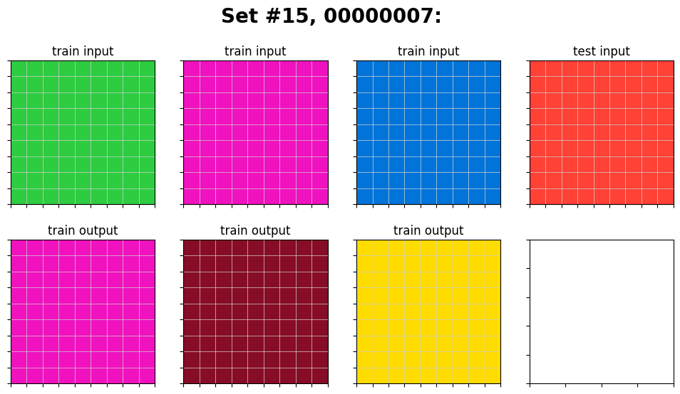
code = '007bbfb7'
data_mgr.reload_data(folder = 'c:/tmp/arc-prize-2024', prefix = 'arc-agi_training_')
data = data_mgr.get_data_for_code(code)
print(data)
out = data_mgr.get_solutions_for_code(code)
print(out)
print(data_mgr.get_num_arrays_for_code(code))Execution time of reload_data: 0.1050 seconds
Execution time of reload_data: 0.0130 seconds
{'test': [{'input': [[7, 0, 7], [7, 0, 7], [7, 7, 0]]}], 'train': [{'input': [[0, 7, 7], [7, 7, 7], [0, 7, 7]], 'output': [[0, 0, 0, 0, 7, 7, 0, 7, 7], [0, 0, 0, 7, 7, 7, 7, 7, 7], [0, 0, 0, 0, 7, 7, 0, 7, 7], [0, 7, 7, 0, 7, 7, 0, 7, 7], [7, 7, 7, 7, 7, 7, 7, 7, 7], [0, 7, 7, 0, 7, 7, 0, 7, 7], [0, 0, 0, 0, 7, 7, 0, 7, 7], [0, 0, 0, 7, 7, 7, 7, 7, 7], [0, 0, 0, 0, 7, 7, 0, 7, 7]]}, {'input': [[4, 0, 4], [0, 0, 0], [0, 4, 0]], 'output': [[4, 0, 4, 0, 0, 0, 4, 0, 4], [0, 0, 0, 0, 0, 0, 0, 0, 0], [0, 4, 0, 0, 0, 0, 0, 4, 0], [0, 0, 0, 0, 0, 0, 0, 0, 0], [0, 0, 0, 0, 0, 0, 0, 0, 0], [0, 0, 0, 0, 0, 0, 0, 0, 0], [0, 0, 0, 4, 0, 4, 0, 0, 0], [0, 0, 0, 0, 0, 0, 0, 0, 0], [0, 0, 0, 0, 4, 0, 0, 0, 0]]}, {'input': [[0, 0, 0], [0, 0, 2], [2, 0, 2]], 'output': [[0, 0, 0, 0, 0, 0, 0, 0, 0], [0, 0, 0, 0, 0, 0, 0, 0, 0], [0, 0, 0, 0, 0, 0, 0, 0, 0], [0, 0, 0, 0, 0, 0, 0, 0, 0], [0, 0, 0, 0, 0, 0, 0, 0, 2], [0, 0, 0, 0, 0, 0, 2, 0, 2], [0, 0, 0, 0, 0, 0, 0, 0, 0], [0, 0, 2, 0, 0, 0, 0, 0, 2], [2, 0, 2, 0, 0, 0, 2, 0, 2]]}, {'input': [[6, 6, 0], [6, 0, 0], [0, 6, 6]], 'output': [[6, 6, 0, 6, 6, 0, 0, 0, 0], [6, 0, 0, 6, 0, 0, 0, 0, 0], [0, 6, 6, 0, 6, 6, 0, 0, 0], [6, 6, 0, 0, 0, 0, 0, 0, 0], [6, 0, 0, 0, 0, 0, 0, 0, 0], [0, 6, 6, 0, 0, 0, 0, 0, 0], [0, 0, 0, 6, 6, 0, 6, 6, 0], [0, 0, 0, 6, 0, 0, 6, 0, 0], [0, 0, 0, 0, 6, 6, 0, 6, 6]]}, {'input': [[2, 2, 2], [0, 0, 0], [0, 2, 2]], 'output': [[2, 2, 2, 2, 2, 2, 2, 2, 2], [0, 0, 0, 0, 0, 0, 0, 0, 0], [0, 2, 2, 0, 2, 2, 0, 2, 2], [0, 0, 0, 0, 0, 0, 0, 0, 0], [0, 0, 0, 0, 0, 0, 0, 0, 0], [0, 0, 0, 0, 0, 0, 0, 0, 0], [0, 0, 0, 2, 2, 2, 2, 2, 2], [0, 0, 0, 0, 0, 0, 0, 0, 0], [0, 0, 0, 0, 2, 2, 0, 2, 2]]}]}
[[7, 0, 7, 0, 0, 0, 7, 0, 7], [7, 0, 7, 0, 0, 0, 7, 0, 7], [7, 7, 0, 0, 0, 0, 7, 7, 0], [7, 0, 7, 0, 0, 0, 7, 0, 7], [7, 0, 7, 0, 0, 0, 7, 0, 7], [7, 7, 0, 0, 0, 0, 7, 7, 0], [7, 0, 7, 7, 0, 7, 0, 0, 0], [7, 0, 7, 7, 0, 7, 0, 0, 0], [7, 7, 0, 7, 7, 0, 0, 0, 0]]
5code = '0d3d703e'
task = data_mgr.get_data_for_code(code)
print(task)
task_solution = data_mgr.get_solutions_for_code(code)
print(task_solution)
plot_task(task, task_solution, 15, code){'test': [{'input': [[8, 1, 3], [8, 1, 3], [8, 1, 3]]}], 'train': [{'input': [[3, 1, 2], [3, 1, 2], [3, 1, 2]], 'output': [[4, 5, 6], [4, 5, 6], [4, 5, 6]]}, {'input': [[2, 3, 8], [2, 3, 8], [2, 3, 8]], 'output': [[6, 4, 9], [6, 4, 9], [6, 4, 9]]}, {'input': [[5, 8, 6], [5, 8, 6], [5, 8, 6]], 'output': [[1, 9, 2], [1, 9, 2], [1, 9, 2]]}, {'input': [[9, 4, 2], [9, 4, 2], [9, 4, 2]], 'output': [[8, 3, 6], [8, 3, 6], [8, 3, 6]]}]}
[[9, 5, 4], [9, 5, 4], [9, 5, 4]]
#15, 0d3d703e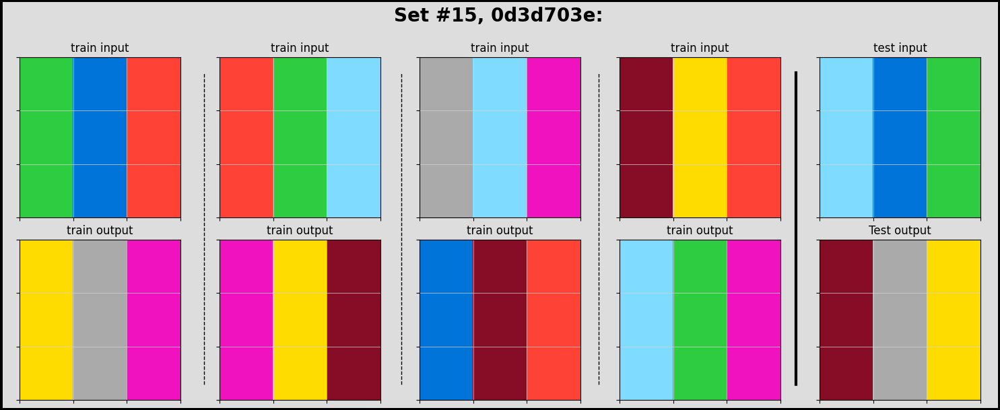
code = '25d8a9c8'
task = data_mgr.get_data_for_code(code)
print(task)
task_solution = data_mgr.get_solutions_for_code(code)
print(task_solution)
plot_task(task, task_solution, 15, code){'test': [{'input': [[4, 4, 4], [3, 2, 3], [8, 8, 8]]}], 'train': [{'input': [[4, 4, 4], [2, 3, 2], [2, 3, 3]], 'output': [[5, 5, 5], [0, 0, 0], [0, 0, 0]]}, {'input': [[7, 3, 3], [6, 6, 6], [3, 7, 7]], 'output': [[0, 0, 0], [5, 5, 5], [0, 0, 0]]}, {'input': [[2, 9, 2], [4, 4, 4], [9, 9, 9]], 'output': [[0, 0, 0], [5, 5, 5], [5, 5, 5]]}, {'input': [[2, 2, 4], [2, 2, 4], [1, 1, 1]], 'output': [[0, 0, 0], [0, 0, 0], [5, 5, 5]]}]}
[[5, 5, 5], [0, 0, 0], [5, 5, 5]]
#15, 25d8a9c8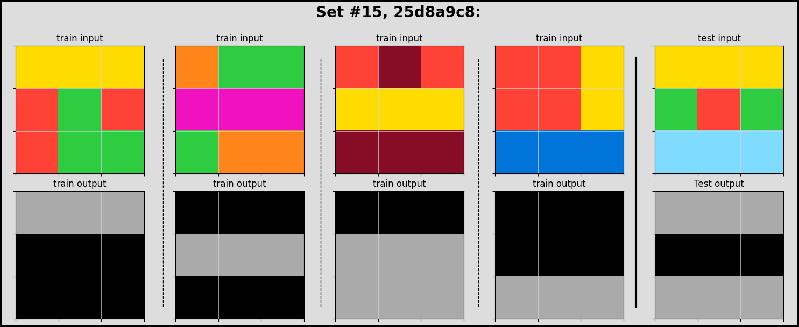
code = '25ff71a9'
task = data_mgr.get_data_for_code(code)
print(task)
task_solution = data_mgr.get_solutions_for_code(code)
print(task_solution)
plot_task(task, task_solution, 15, code){'test': [{'input': [[2, 0, 0], [2, 0, 0], [0, 0, 0]]}, {'input': [[0, 0, 0], [0, 1, 0], [0, 0, 0]]}], 'train': [{'input': [[1, 1, 1], [0, 0, 0], [0, 0, 0]], 'output': [[0, 0, 0], [1, 1, 1], [0, 0, 0]]}, {'input': [[0, 0, 0], [1, 1, 1], [0, 0, 0]], 'output': [[0, 0, 0], [0, 0, 0], [1, 1, 1]]}, {'input': [[0, 1, 0], [1, 1, 0], [0, 0, 0]], 'output': [[0, 0, 0], [0, 1, 0], [1, 1, 0]]}, {'input': [[0, 2, 2], [0, 0, 2], [0, 0, 0]], 'output': [[0, 0, 0], [0, 2, 2], [0, 0, 2]]}]}
[[0, 0, 0], [2, 0, 0], [2, 0, 0]]
#15, 25ff71a9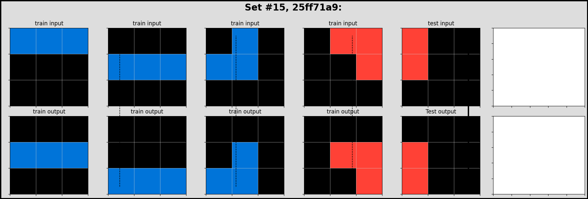
code = '3c9b0459'
task = data_mgr.get_data_for_code(code)
print(task)
task_solution = data_mgr.get_solutions_for_code(code)
print(task_solution)
plot_task(task, task_solution, 15, code){'test': [{'input': [[6, 4, 4], [6, 6, 4], [4, 6, 7]]}], 'train': [{'input': [[2, 2, 1], [2, 1, 2], [2, 8, 1]], 'output': [[1, 8, 2], [2, 1, 2], [1, 2, 2]]}, {'input': [[9, 2, 4], [2, 4, 4], [2, 9, 2]], 'output': [[2, 9, 2], [4, 4, 2], [4, 2, 9]]}, {'input': [[8, 8, 8], [5, 5, 8], [8, 5, 5]], 'output': [[5, 5, 8], [8, 5, 5], [8, 8, 8]]}, {'input': [[3, 2, 9], [9, 9, 9], [2, 3, 3]], 'output': [[3, 3, 2], [9, 9, 9], [9, 2, 3]]}]}
[[7, 6, 4], [4, 6, 6], [4, 4, 6]]
#15, 3c9b0459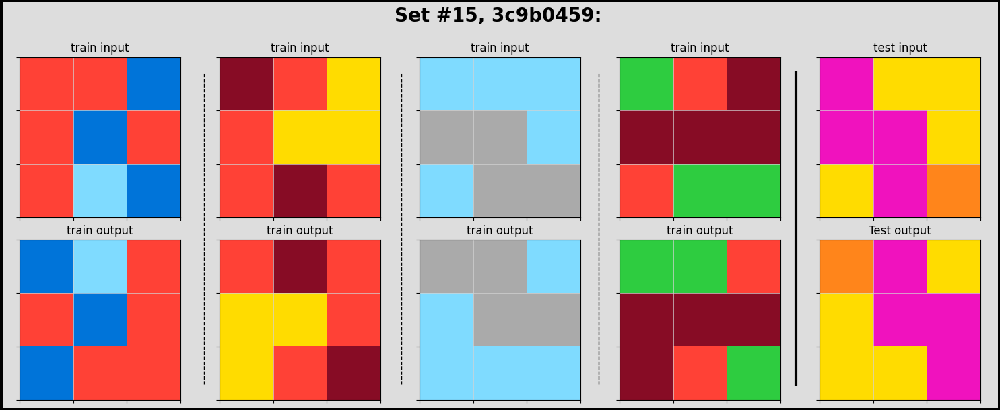
code = '5582e5ca'
task = data_mgr.get_data_for_code(code)
print(task)
task_solution = data_mgr.get_solutions_for_code(code)
print(task_solution)
plot_task(task, task_solution, 15, code){'test': [{'input': [[8, 8, 6], [4, 6, 9], [8, 3, 0]]}], 'train': [{'input': [[4, 4, 8], [6, 4, 3], [6, 3, 0]], 'output': [[4, 4, 4], [4, 4, 4], [4, 4, 4]]}, {'input': [[6, 8, 9], [1, 8, 1], [9, 4, 9]], 'output': [[9, 9, 9], [9, 9, 9], [9, 9, 9]]}, {'input': [[4, 6, 9], [6, 4, 1], [8, 8, 6]], 'output': [[6, 6, 6], [6, 6, 6], [6, 6, 6]]}]}
[[8, 8, 8], [8, 8, 8], [8, 8, 8]]
#15, 5582e5ca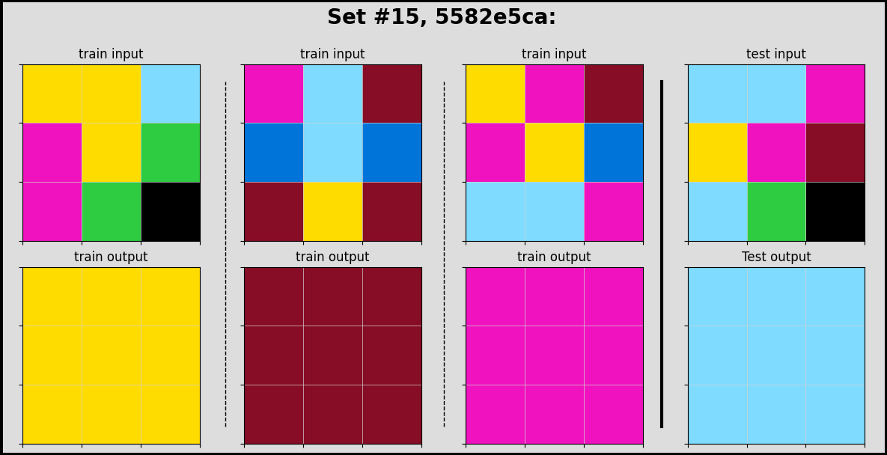
code = '6150a2bd'
task = data_mgr.get_data_for_code(code)
print(task)
task_solution = data_mgr.get_solutions_for_code(code)
print(task_solution)
plot_task(task, task_solution, 15, code){'test': [{'input': [[6, 3, 5], [6, 8, 0], [4, 0, 0]]}], 'train': [{'input': [[3, 3, 8], [3, 7, 0], [5, 0, 0]], 'output': [[0, 0, 5], [0, 7, 3], [8, 3, 3]]}, {'input': [[5, 5, 2], [1, 0, 0], [0, 0, 0]], 'output': [[0, 0, 0], [0, 0, 1], [2, 5, 5]]}]}
[[0, 0, 4], [0, 8, 6], [5, 3, 6]]
#15, 6150a2bd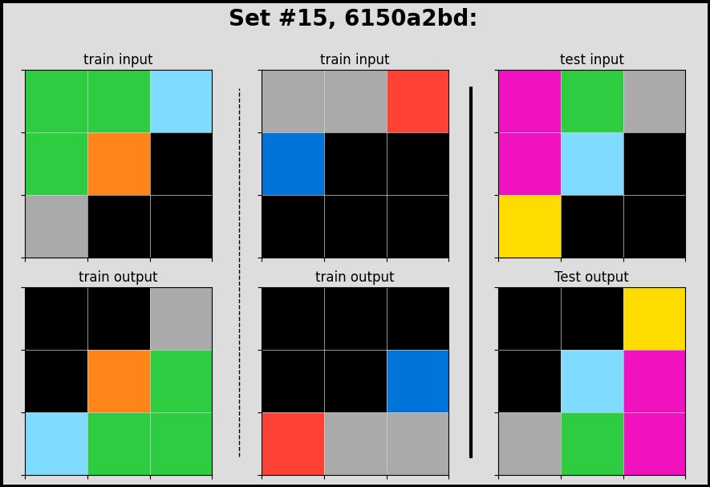
code = '150deff5'
task = data_mgr.get_data_for_code(code)
print(task)
task_solution = data_mgr.get_solutions_for_code(code)
print(task_solution)
plot_task(task, task_solution, 15, code){'test': [{'input': [[0, 0, 5, 5, 0, 5, 5, 5, 0, 0, 0], [0, 0, 5, 5, 0, 0, 5, 0, 0, 0, 0], [0, 5, 5, 5, 5, 5, 5, 0, 0, 0, 0], [0, 0, 0, 0, 5, 5, 5, 0, 0, 0, 0], [0, 0, 0, 5, 5, 5, 0, 0, 0, 0, 0], [0, 0, 0, 0, 0, 5, 5, 0, 0, 0, 0], [0, 0, 0, 0, 0, 5, 5, 0, 0, 0, 0], [0, 0, 0, 0, 0, 0, 0, 0, 0, 0, 0]]}], 'train': [{'input': [[0, 0, 0, 0, 0, 0, 0, 0, 0, 0, 0], [0, 0, 5, 5, 0, 0, 0, 0, 0, 0, 0], [0, 0, 5, 5, 5, 5, 5, 0, 0, 0, 0], [0, 0, 0, 5, 5, 5, 0, 0, 0, 0, 0], [0, 0, 0, 5, 5, 5, 5, 5, 0, 0, 0], [0, 0, 0, 5, 0, 0, 5, 5, 0, 0, 0], [0, 0, 0, 0, 0, 5, 5, 5, 0, 0, 0], [0, 0, 0, 0, 0, 0, 0, 0, 0, 0, 0], [0, 0, 0, 0, 0, 0, 0, 0, 0, 0, 0]], 'output': [[0, 0, 0, 0, 0, 0, 0, 0, 0, 0, 0], [0, 0, 8, 8, 0, 0, 0, 0, 0, 0, 0], [0, 0, 8, 8, 2, 2, 2, 0, 0, 0, 0], [0, 0, 0, 2, 8, 8, 0, 0, 0, 0, 0], [0, 0, 0, 2, 8, 8, 8, 8, 0, 0, 0], [0, 0, 0, 2, 0, 0, 8, 8, 0, 0, 0], [0, 0, 0, 0, 0, 2, 2, 2, 0, 0, 0], [0, 0, 0, 0, 0, 0, 0, 0, 0, 0, 0], [0, 0, 0, 0, 0, 0, 0, 0, 0, 0, 0]]}, {'input': [[0, 0, 0, 0, 0, 0, 0, 0, 0, 0], [0, 5, 5, 5, 5, 5, 5, 0, 0, 0], [0, 5, 5, 5, 5, 5, 5, 0, 0, 0], [0, 0, 0, 5, 0, 0, 5, 0, 0, 0], [0, 0, 0, 0, 5, 5, 5, 0, 0, 0], [0, 0, 0, 0, 5, 5, 5, 0, 0, 0], [0, 0, 0, 0, 5, 0, 0, 0, 0, 0], [0, 0, 0, 0, 0, 0, 0, 0, 0, 0]], 'output': [[0, 0, 0, 0, 0, 0, 0, 0, 0, 0], [0, 8, 8, 2, 8, 8, 2, 0, 0, 0], [0, 8, 8, 2, 8, 8, 2, 0, 0, 0], [0, 0, 0, 2, 0, 0, 2, 0, 0, 0], [0, 0, 0, 0, 2, 8, 8, 0, 0, 0], [0, 0, 0, 0, 2, 8, 8, 0, 0, 0], [0, 0, 0, 0, 2, 0, 0, 0, 0, 0], [0, 0, 0, 0, 0, 0, 0, 0, 0, 0]]}, {'input': [[0, 0, 0, 0, 0, 0, 0, 0, 0], [0, 5, 5, 5, 5, 5, 0, 0, 0], [0, 0, 0, 0, 5, 5, 0, 0, 0], [0, 0, 0, 5, 0, 0, 0, 0, 0], [0, 0, 0, 5, 5, 5, 0, 0, 0], [0, 0, 0, 5, 5, 5, 0, 0, 0], [0, 0, 0, 0, 0, 0, 0, 0, 0], [0, 0, 0, 0, 0, 0, 0, 0, 0]], 'output': [[0, 0, 0, 0, 0, 0, 0, 0, 0], [0, 2, 2, 2, 8, 8, 0, 0, 0], [0, 0, 0, 0, 8, 8, 0, 0, 0], [0, 0, 0, 2, 0, 0, 0, 0, 0], [0, 0, 0, 2, 8, 8, 0, 0, 0], [0, 0, 0, 2, 8, 8, 0, 0, 0], [0, 0, 0, 0, 0, 0, 0, 0, 0], [0, 0, 0, 0, 0, 0, 0, 0, 0]]}]}
[[0, 0, 8, 8, 0, 2, 2, 2, 0, 0, 0], [0, 0, 8, 8, 0, 0, 2, 0, 0, 0, 0], [0, 2, 2, 2, 8, 8, 2, 0, 0, 0, 0], [0, 0, 0, 0, 8, 8, 2, 0, 0, 0, 0], [0, 0, 0, 2, 2, 2, 0, 0, 0, 0, 0], [0, 0, 0, 0, 0, 8, 8, 0, 0, 0, 0], [0, 0, 0, 0, 0, 8, 8, 0, 0, 0, 0], [0, 0, 0, 0, 0, 0, 0, 0, 0, 0, 0]]
#15, 150deff5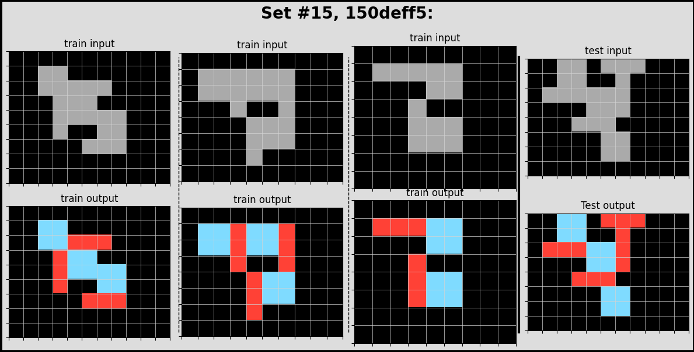
code = '0ca9ddb6'
task = data_mgr.get_data_for_code(code)
print(task)
task_solution = data_mgr.get_solutions_for_code(code)
print(task_solution)
plot_task(task, task_solution, 15, code){'test': [{'input': [[0, 0, 0, 0, 0, 0, 0, 0, 0], [0, 0, 0, 0, 0, 0, 0, 0, 0], [0, 0, 0, 0, 0, 0, 1, 0, 0], [0, 0, 2, 0, 0, 0, 0, 0, 0], [0, 0, 0, 0, 0, 0, 0, 0, 0], [0, 0, 0, 0, 0, 8, 0, 0, 0], [0, 0, 0, 0, 0, 0, 0, 0, 0], [0, 6, 0, 0, 0, 0, 0, 2, 0], [0, 0, 0, 0, 0, 0, 0, 0, 0]]}], 'train': [{'input': [[0, 0, 0, 0, 0, 0, 0, 0, 0], [0, 0, 0, 0, 0, 0, 0, 0, 0], [0, 0, 0, 0, 0, 0, 0, 0, 0], [0, 0, 2, 0, 0, 0, 0, 0, 0], [0, 0, 0, 0, 0, 0, 0, 0, 0], [0, 0, 0, 0, 0, 0, 0, 0, 0], [0, 0, 0, 0, 0, 0, 1, 0, 0], [0, 0, 0, 0, 0, 0, 0, 0, 0], [0, 0, 0, 0, 0, 0, 0, 0, 0]], 'output': [[0, 0, 0, 0, 0, 0, 0, 0, 0], [0, 0, 0, 0, 0, 0, 0, 0, 0], [0, 4, 0, 4, 0, 0, 0, 0, 0], [0, 0, 2, 0, 0, 0, 0, 0, 0], [0, 4, 0, 4, 0, 0, 0, 0, 0], [0, 0, 0, 0, 0, 0, 7, 0, 0], [0, 0, 0, 0, 0, 7, 1, 7, 0], [0, 0, 0, 0, 0, 0, 7, 0, 0], [0, 0, 0, 0, 0, 0, 0, 0, 0]]}, {'input': [[0, 0, 0, 8, 0, 0, 0, 0, 0], [0, 0, 0, 0, 0, 0, 0, 0, 0], [0, 0, 0, 0, 0, 0, 2, 0, 0], [0, 0, 1, 0, 0, 0, 0, 0, 0], [0, 0, 0, 0, 0, 0, 0, 0, 0], [0, 0, 0, 0, 0, 0, 0, 0, 0], [0, 0, 0, 0, 0, 0, 1, 0, 0], [0, 2, 0, 0, 0, 0, 0, 0, 0], [0, 0, 0, 0, 0, 0, 0, 0, 0]], 'output': [[0, 0, 0, 8, 0, 0, 0, 0, 0], [0, 0, 0, 0, 0, 4, 0, 4, 0], [0, 0, 7, 0, 0, 0, 2, 0, 0], [0, 7, 1, 7, 0, 4, 0, 4, 0], [0, 0, 7, 0, 0, 0, 0, 0, 0], [0, 0, 0, 0, 0, 0, 7, 0, 0], [4, 0, 4, 0, 0, 7, 1, 7, 0], [0, 2, 0, 0, 0, 0, 7, 0, 0], [4, 0, 4, 0, 0, 0, 0, 0, 0]]}, {'input': [[0, 0, 0, 0, 0, 0, 0, 0, 0], [0, 0, 0, 0, 0, 0, 0, 0, 0], [0, 0, 2, 0, 0, 0, 0, 0, 0], [0, 0, 0, 0, 0, 0, 0, 0, 0], [0, 0, 0, 0, 0, 0, 0, 0, 0], [0, 0, 0, 0, 0, 0, 6, 0, 0], [0, 0, 0, 0, 0, 0, 0, 0, 0], [0, 0, 0, 1, 0, 0, 0, 0, 0], [0, 0, 0, 0, 0, 0, 0, 0, 0]], 'output': [[0, 0, 0, 0, 0, 0, 0, 0, 0], [0, 4, 0, 4, 0, 0, 0, 0, 0], [0, 0, 2, 0, 0, 0, 0, 0, 0], [0, 4, 0, 4, 0, 0, 0, 0, 0], [0, 0, 0, 0, 0, 0, 0, 0, 0], [0, 0, 0, 0, 0, 0, 6, 0, 0], [0, 0, 0, 7, 0, 0, 0, 0, 0], [0, 0, 7, 1, 7, 0, 0, 0, 0], [0, 0, 0, 7, 0, 0, 0, 0, 0]]}]}
[[0, 0, 0, 0, 0, 0, 0, 0, 0], [0, 0, 0, 0, 0, 0, 7, 0, 0], [0, 4, 0, 4, 0, 7, 1, 7, 0], [0, 0, 2, 0, 0, 0, 7, 0, 0], [0, 4, 0, 4, 0, 0, 0, 0, 0], [0, 0, 0, 0, 0, 8, 0, 0, 0], [0, 0, 0, 0, 0, 0, 4, 0, 4], [0, 6, 0, 0, 0, 0, 0, 2, 0], [0, 0, 0, 0, 0, 0, 4, 0, 4]]
#15, 0ca9ddb6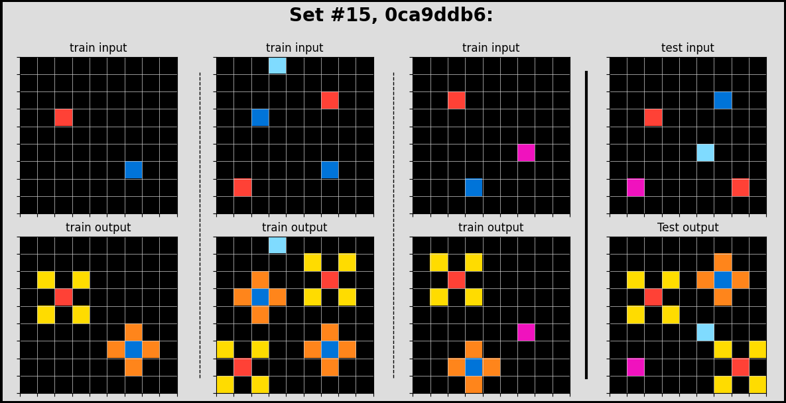
code = '00d62c1b'
task = data_mgr.get_data_for_code(code)
print(task)
task_solution = data_mgr.get_solutions_for_code(code)
print(task_solution)
plot_task(task, task_solution, 15, code){'test': [{'input': [[0, 0, 0, 0, 0, 0, 0, 0, 0, 0, 0, 0, 0, 0, 0, 0, 0, 0, 0, 0], [0, 0, 3, 0, 0, 0, 0, 0, 0, 0, 0, 0, 0, 0, 0, 0, 0, 0, 0, 0], [0, 3, 0, 3, 3, 0, 0, 0, 0, 0, 0, 0, 0, 0, 0, 0, 0, 0, 0, 0], [0, 0, 3, 0, 3, 3, 3, 3, 3, 0, 3, 3, 0, 0, 0, 0, 0, 0, 0, 0], [0, 0, 0, 0, 3, 0, 0, 0, 0, 3, 0, 0, 3, 0, 0, 0, 0, 0, 0, 0], [0, 0, 0, 0, 3, 3, 3, 3, 3, 0, 3, 3, 3, 0, 0, 0, 0, 0, 0, 0], [0, 0, 0, 0, 0, 0, 0, 0, 0, 0, 0, 0, 0, 3, 3, 3, 3, 3, 0, 0], [0, 0, 0, 0, 0, 0, 0, 0, 0, 0, 0, 0, 0, 3, 0, 0, 0, 3, 0, 0], [0, 0, 0, 0, 0, 0, 0, 0, 0, 0, 0, 0, 0, 3, 0, 0, 0, 3, 0, 0], [0, 0, 0, 0, 0, 0, 0, 0, 0, 3, 3, 3, 3, 3, 0, 0, 0, 3, 0, 0], [0, 0, 0, 0, 0, 0, 0, 0, 0, 3, 0, 0, 0, 3, 0, 0, 0, 3, 0, 0], [0, 0, 0, 0, 0, 0, 0, 0, 3, 3, 3, 3, 3, 3, 0, 0, 0, 3, 0, 0], [0, 0, 0, 0, 0, 0, 3, 3, 0, 3, 0, 0, 0, 3, 3, 3, 3, 3, 0, 0], [0, 0, 3, 0, 0, 0, 0, 0, 3, 3, 0, 0, 0, 0, 0, 0, 0, 0, 0, 0], [0, 3, 0, 3, 0, 0, 0, 0, 0, 0, 0, 0, 0, 0, 0, 0, 0, 0, 0, 0], [0, 0, 3, 0, 3, 0, 3, 3, 3, 3, 3, 3, 0, 0, 0, 0, 0, 0, 0, 0], [0, 0, 0, 0, 0, 0, 0, 3, 0, 0, 0, 3, 0, 0, 0, 0, 0, 0, 0, 0], [0, 0, 0, 0, 0, 0, 0, 3, 0, 0, 0, 3, 0, 0, 0, 0, 0, 0, 0, 0], [0, 0, 0, 0, 0, 0, 0, 3, 3, 3, 3, 3, 0, 0, 0, 0, 0, 0, 0, 0], [0, 0, 0, 0, 0, 0, 0, 0, 0, 0, 0, 0, 0, 0, 0, 0, 0, 0, 0, 0]]}], 'train': [{'input': [[0, 0, 0, 0, 0, 0], [0, 0, 3, 0, 0, 0], [0, 3, 0, 3, 0, 0], [0, 0, 3, 0, 3, 0], [0, 0, 0, 3, 0, 0], [0, 0, 0, 0, 0, 0]], 'output': [[0, 0, 0, 0, 0, 0], [0, 0, 3, 0, 0, 0], [0, 3, 4, 3, 0, 0], [0, 0, 3, 4, 3, 0], [0, 0, 0, 3, 0, 0], [0, 0, 0, 0, 0, 0]]}, {'input': [[0, 0, 0, 0, 0, 0, 0, 0, 0, 0], [0, 0, 3, 0, 3, 0, 0, 0, 0, 0], [0, 0, 0, 3, 0, 3, 0, 0, 0, 0], [0, 0, 3, 0, 0, 0, 3, 0, 0, 0], [0, 0, 0, 0, 0, 3, 0, 3, 0, 0], [0, 0, 0, 3, 0, 3, 3, 0, 0, 0], [0, 0, 3, 3, 3, 0, 0, 0, 0, 0], [0, 0, 0, 3, 0, 0, 0, 0, 0, 0], [0, 0, 0, 0, 0, 0, 0, 0, 0, 0], [0, 0, 0, 0, 0, 0, 0, 0, 0, 0]], 'output': [[0, 0, 0, 0, 0, 0, 0, 0, 0, 0], [0, 0, 3, 0, 3, 0, 0, 0, 0, 0], [0, 0, 0, 3, 0, 3, 0, 0, 0, 0], [0, 0, 3, 0, 0, 0, 3, 0, 0, 0], [0, 0, 0, 0, 0, 3, 4, 3, 0, 0], [0, 0, 0, 3, 0, 3, 3, 0, 0, 0], [0, 0, 3, 3, 3, 0, 0, 0, 0, 0], [0, 0, 0, 3, 0, 0, 0, 0, 0, 0], [0, 0, 0, 0, 0, 0, 0, 0, 0, 0], [0, 0, 0, 0, 0, 0, 0, 0, 0, 0]]}, {'input': [[0, 0, 0, 0, 0, 3, 0, 0, 0, 0], [0, 0, 0, 0, 3, 0, 0, 0, 0, 0], [0, 3, 3, 0, 3, 3, 0, 3, 0, 0], [3, 0, 0, 3, 0, 0, 3, 0, 3, 0], [0, 0, 0, 3, 0, 0, 3, 3, 0, 0], [0, 0, 0, 3, 0, 0, 3, 0, 0, 0], [0, 0, 0, 3, 0, 0, 3, 0, 0, 0], [0, 0, 0, 0, 3, 3, 0, 3, 0, 0], [0, 0, 0, 0, 0, 0, 0, 0, 3, 0], [0, 0, 0, 0, 0, 0, 0, 0, 0, 0]], 'output': [[0, 0, 0, 0, 0, 3, 0, 0, 0, 0], [0, 0, 0, 0, 3, 0, 0, 0, 0, 0], [0, 3, 3, 0, 3, 3, 0, 3, 0, 0], [3, 0, 0, 3, 4, 4, 3, 4, 3, 0], [0, 0, 0, 3, 4, 4, 3, 3, 0, 0], [0, 0, 0, 3, 4, 4, 3, 0, 0, 0], [0, 0, 0, 3, 4, 4, 3, 0, 0, 0], [0, 0, 0, 0, 3, 3, 0, 3, 0, 0], [0, 0, 0, 0, 0, 0, 0, 0, 3, 0], [0, 0, 0, 0, 0, 0, 0, 0, 0, 0]]}, {'input': [[0, 0, 0, 0, 0, 0, 0, 0, 0, 0], [0, 0, 3, 3, 3, 3, 0, 0, 0, 0], [0, 0, 3, 0, 0, 3, 0, 0, 0, 0], [0, 0, 3, 0, 0, 3, 0, 3, 0, 0], [0, 0, 3, 3, 3, 3, 3, 3, 3, 0], [0, 0, 0, 3, 0, 0, 0, 0, 3, 0], [0, 0, 0, 3, 0, 0, 0, 3, 3, 0], [0, 0, 0, 3, 3, 0, 0, 3, 0, 3], [0, 0, 0, 3, 0, 3, 0, 0, 3, 0], [0, 0, 0, 0, 3, 0, 0, 0, 0, 0]], 'output': [[0, 0, 0, 0, 0, 0, 0, 0, 0, 0], [0, 0, 3, 3, 3, 3, 0, 0, 0, 0], [0, 0, 3, 4, 4, 3, 0, 0, 0, 0], [0, 0, 3, 4, 4, 3, 0, 3, 0, 0], [0, 0, 3, 3, 3, 3, 3, 3, 3, 0], [0, 0, 0, 3, 0, 0, 0, 0, 3, 0], [0, 0, 0, 3, 0, 0, 0, 3, 3, 0], [0, 0, 0, 3, 3, 0, 0, 3, 4, 3], [0, 0, 0, 3, 4, 3, 0, 0, 3, 0], [0, 0, 0, 0, 3, 0, 0, 0, 0, 0]]}, {'input': [[0, 0, 0, 0, 0, 0, 0, 0, 0, 0, 0, 0, 0, 0, 0, 0, 0, 0, 0, 0], [0, 0, 0, 0, 0, 0, 0, 0, 3, 0, 0, 0, 0, 0, 0, 0, 0, 0, 0, 0], [0, 0, 0, 0, 3, 3, 3, 3, 0, 3, 3, 0, 0, 0, 0, 0, 0, 0, 0, 0], [0, 0, 0, 0, 0, 0, 0, 0, 3, 0, 3, 0, 0, 0, 0, 0, 0, 0, 3, 0], [0, 0, 0, 0, 0, 0, 0, 0, 3, 3, 3, 3, 3, 3, 3, 3, 0, 0, 0, 0], [0, 0, 0, 0, 0, 0, 0, 0, 3, 0, 0, 0, 0, 0, 0, 3, 0, 0, 0, 0], [0, 0, 0, 0, 3, 0, 0, 0, 3, 0, 0, 0, 0, 0, 0, 3, 0, 0, 0, 0], [0, 0, 0, 0, 0, 0, 0, 0, 3, 0, 0, 0, 0, 0, 0, 3, 0, 0, 0, 0], [0, 0, 0, 0, 0, 0, 0, 0, 3, 0, 0, 0, 0, 0, 0, 3, 0, 0, 0, 0], [0, 0, 3, 0, 0, 0, 0, 0, 3, 3, 3, 3, 3, 3, 3, 3, 0, 0, 0, 0], [0, 0, 0, 0, 0, 0, 0, 0, 3, 0, 0, 0, 0, 0, 0, 0, 0, 0, 0, 0], [0, 0, 0, 0, 0, 0, 0, 0, 3, 3, 3, 0, 0, 0, 0, 3, 0, 3, 0, 0], [0, 0, 0, 0, 0, 0, 3, 3, 0, 0, 3, 0, 0, 3, 0, 0, 0, 0, 0, 0], [0, 0, 0, 0, 0, 0, 0, 3, 0, 0, 3, 3, 0, 0, 3, 0, 0, 3, 0, 0], [0, 0, 0, 0, 0, 0, 0, 3, 3, 3, 3, 0, 3, 0, 0, 3, 3, 3, 0, 0], [0, 0, 0, 0, 0, 0, 0, 0, 0, 0, 3, 0, 0, 0, 0, 3, 0, 3, 0, 0], [0, 0, 0, 0, 0, 0, 0, 0, 0, 0, 0, 0, 3, 0, 0, 3, 3, 3, 0, 0], [0, 0, 0, 0, 0, 0, 0, 0, 0, 0, 0, 0, 0, 3, 0, 0, 0, 0, 0, 0], [0, 0, 0, 0, 0, 0, 0, 0, 0, 0, 0, 0, 0, 0, 0, 0, 0, 0, 0, 0], [0, 0, 0, 0, 0, 0, 0, 0, 0, 0, 0, 0, 0, 0, 0, 0, 0, 0, 0, 0]], 'output': [[0, 0, 0, 0, 0, 0, 0, 0, 0, 0, 0, 0, 0, 0, 0, 0, 0, 0, 0, 0], [0, 0, 0, 0, 0, 0, 0, 0, 3, 0, 0, 0, 0, 0, 0, 0, 0, 0, 0, 0], [0, 0, 0, 0, 3, 3, 3, 3, 4, 3, 3, 0, 0, 0, 0, 0, 0, 0, 0, 0], [0, 0, 0, 0, 0, 0, 0, 0, 3, 4, 3, 0, 0, 0, 0, 0, 0, 0, 3, 0], [0, 0, 0, 0, 0, 0, 0, 0, 3, 3, 3, 3, 3, 3, 3, 3, 0, 0, 0, 0], [0, 0, 0, 0, 0, 0, 0, 0, 3, 4, 4, 4, 4, 4, 4, 3, 0, 0, 0, 0], [0, 0, 0, 0, 3, 0, 0, 0, 3, 4, 4, 4, 4, 4, 4, 3, 0, 0, 0, 0], [0, 0, 0, 0, 0, 0, 0, 0, 3, 4, 4, 4, 4, 4, 4, 3, 0, 0, 0, 0], [0, 0, 0, 0, 0, 0, 0, 0, 3, 4, 4, 4, 4, 4, 4, 3, 0, 0, 0, 0], [0, 0, 3, 0, 0, 0, 0, 0, 3, 3, 3, 3, 3, 3, 3, 3, 0, 0, 0, 0], [0, 0, 0, 0, 0, 0, 0, 0, 3, 0, 0, 0, 0, 0, 0, 0, 0, 0, 0, 0], [0, 0, 0, 0, 0, 0, 0, 0, 3, 3, 3, 0, 0, 0, 0, 3, 0, 3, 0, 0], [0, 0, 0, 0, 0, 0, 3, 3, 4, 4, 3, 0, 0, 3, 0, 0, 0, 0, 0, 0], [0, 0, 0, 0, 0, 0, 0, 3, 4, 4, 3, 3, 0, 0, 3, 0, 0, 3, 0, 0], [0, 0, 0, 0, 0, 0, 0, 3, 3, 3, 3, 0, 3, 0, 0, 3, 3, 3, 0, 0], [0, 0, 0, 0, 0, 0, 0, 0, 0, 0, 3, 0, 0, 0, 0, 3, 4, 3, 0, 0], [0, 0, 0, 0, 0, 0, 0, 0, 0, 0, 0, 0, 3, 0, 0, 3, 3, 3, 0, 0], [0, 0, 0, 0, 0, 0, 0, 0, 0, 0, 0, 0, 0, 3, 0, 0, 0, 0, 0, 0], [0, 0, 0, 0, 0, 0, 0, 0, 0, 0, 0, 0, 0, 0, 0, 0, 0, 0, 0, 0], [0, 0, 0, 0, 0, 0, 0, 0, 0, 0, 0, 0, 0, 0, 0, 0, 0, 0, 0, 0]]}]}
[[0, 0, 0, 0, 0, 0, 0, 0, 0, 0, 0, 0, 0, 0, 0, 0, 0, 0, 0, 0], [0, 0, 3, 0, 0, 0, 0, 0, 0, 0, 0, 0, 0, 0, 0, 0, 0, 0, 0, 0], [0, 3, 4, 3, 3, 0, 0, 0, 0, 0, 0, 0, 0, 0, 0, 0, 0, 0, 0, 0], [0, 0, 3, 0, 3, 3, 3, 3, 3, 0, 3, 3, 0, 0, 0, 0, 0, 0, 0, 0], [0, 0, 0, 0, 3, 4, 4, 4, 4, 3, 4, 4, 3, 0, 0, 0, 0, 0, 0, 0], [0, 0, 0, 0, 3, 3, 3, 3, 3, 0, 3, 3, 3, 0, 0, 0, 0, 0, 0, 0], [0, 0, 0, 0, 0, 0, 0, 0, 0, 0, 0, 0, 0, 3, 3, 3, 3, 3, 0, 0], [0, 0, 0, 0, 0, 0, 0, 0, 0, 0, 0, 0, 0, 3, 4, 4, 4, 3, 0, 0], [0, 0, 0, 0, 0, 0, 0, 0, 0, 0, 0, 0, 0, 3, 4, 4, 4, 3, 0, 0], [0, 0, 0, 0, 0, 0, 0, 0, 0, 3, 3, 3, 3, 3, 4, 4, 4, 3, 0, 0], [0, 0, 0, 0, 0, 0, 0, 0, 0, 3, 4, 4, 4, 3, 4, 4, 4, 3, 0, 0], [0, 0, 0, 0, 0, 0, 0, 0, 3, 3, 3, 3, 3, 3, 4, 4, 4, 3, 0, 0], [0, 0, 0, 0, 0, 0, 3, 3, 4, 3, 0, 0, 0, 3, 3, 3, 3, 3, 0, 0], [0, 0, 3, 0, 0, 0, 0, 0, 3, 3, 0, 0, 0, 0, 0, 0, 0, 0, 0, 0], [0, 3, 4, 3, 0, 0, 0, 0, 0, 0, 0, 0, 0, 0, 0, 0, 0, 0, 0, 0], [0, 0, 3, 0, 3, 0, 3, 3, 3, 3, 3, 3, 0, 0, 0, 0, 0, 0, 0, 0], [0, 0, 0, 0, 0, 0, 0, 3, 4, 4, 4, 3, 0, 0, 0, 0, 0, 0, 0, 0], [0, 0, 0, 0, 0, 0, 0, 3, 4, 4, 4, 3, 0, 0, 0, 0, 0, 0, 0, 0], [0, 0, 0, 0, 0, 0, 0, 3, 3, 3, 3, 3, 0, 0, 0, 0, 0, 0, 0, 0], [0, 0, 0, 0, 0, 0, 0, 0, 0, 0, 0, 0, 0, 0, 0, 0, 0, 0, 0, 0]]
#15, 00d62c1b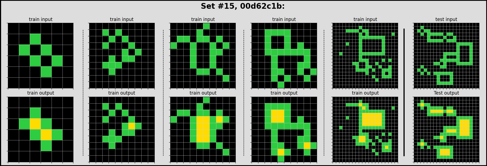